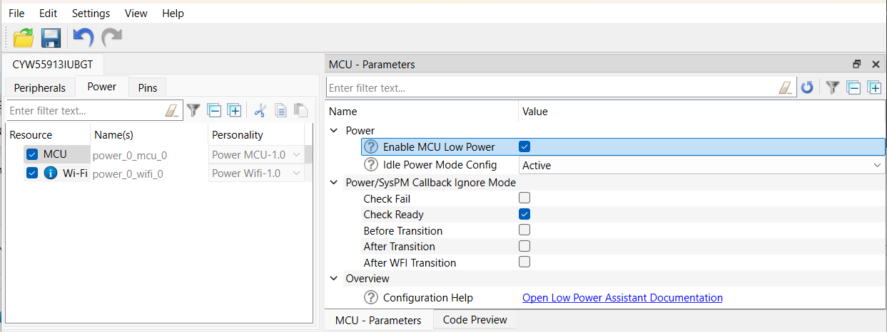
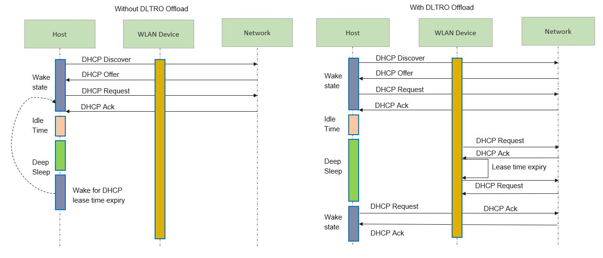
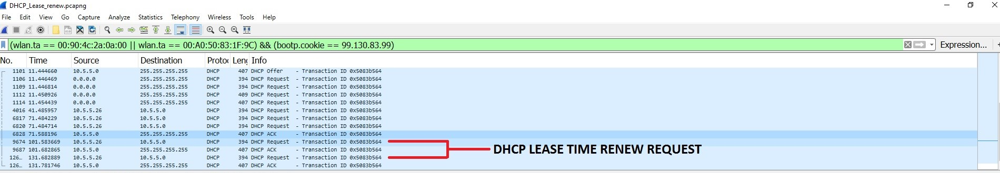
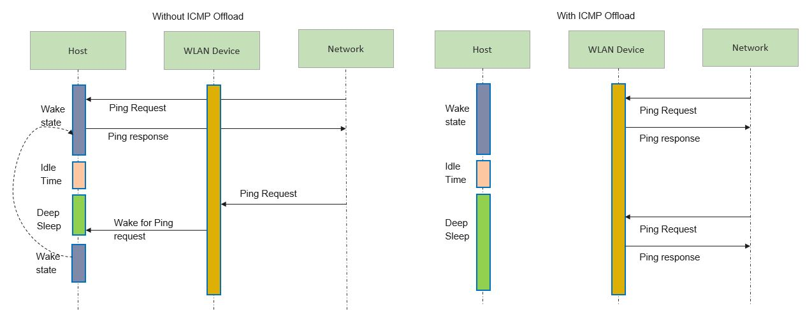
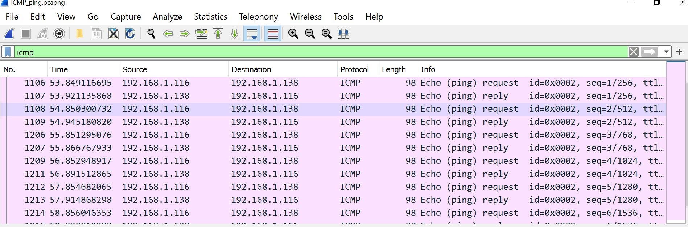
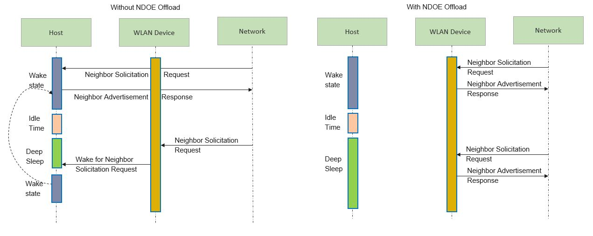
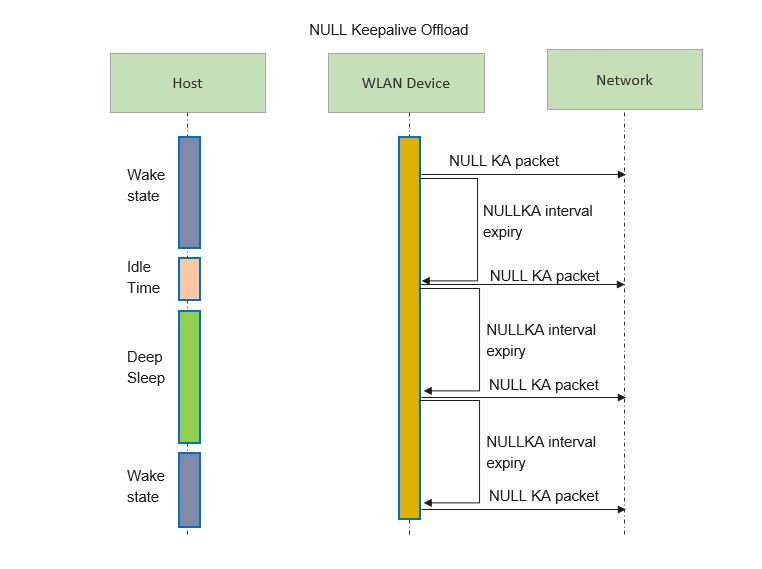
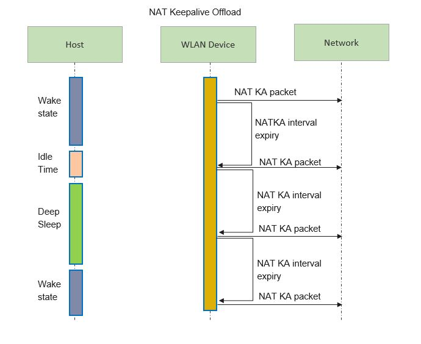
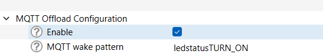

Overview
Power consumption is a key operational factor for embedded devices. The Low Power Assistant (LPA) allows you to configure a MCU and WLAN (Wi-Fi / Bluetooth® radio) device to provide low-power features. This framework presents a unified, low-overhead, user-friendly way to configure, connect, and operate within multiple tasks/cases.
The key points for LPA include:
- Applies to MCU, Wi-Fi, and Bluetooth®
- For RTOS-oriented applications (FreeRTOS/ThreadX).
- Configuration of LPA middleware is required. Application code changes are needed to call LPA middleware functions in runtime.
- Configurations are done using ModusToolbox™ Device Configurator flow.
Features
There are various use cases for the LPA covered in the following sections. The LPA allows you to configure different parts of the design to be energy-efficient.
- Part 1. MCU Low Power Allows you to configure MCU to enter low-power mode to achieve maximum power savings.
- Part 2. Wi-Fi low power
- Wi-Fi host-wake signal Allows the WLAN device to wake up the Host MCU from its low-power state.
- Wi-Fi ARP Offload Improves the power consumption of the connected system by reducing the time that the host needs to stay awake because of ARP broadcast traffic.
- Wi-Fi Packet filter offload Allows the host processor to limit which types of packets get passed up to the host processor from the WLAN subsystem. This is useful to keep out unwanted/unneeded packets from the network that might otherwise wake up the host out of a power saving Deep Sleep mode, or prevent it from entering Deep Sleep mode.
- Wi-Fi TCP keepalive offload Improves the power consumption of the host MCU by offloading TCP keepalive to WLAN firmware.
- DHCP Lease Time Renew offload Improves the power consumption of the host MCU by offloading periodic sending of DHCP Request to DHCP server on lease time expiry to WLAN firmware.
- ICMP offload Improves the power consumption of the host MCU by offloading ping reply to ping request from peer to WLAN firmware.
- Neighbor Discovery offload Improves the power consumption of the host MCU by offloading Neighbor Advertisement response to Neighbor Solicitation request from peer to WLAN firmware.
- NULL Keepalive offload Improves the power consumption of the host MCU by offloading periodic sending of NULL keepalive packets to WLAN firmware.
- NAT Keepalive offload Improves the power consumption of the host MCU by offloading periodic sending of NAT keepalive packets to WLAN firmware.
- Wake on WirelessLAN Allows the MCU to wake on configured patterns. This is useful to keep out from waking up the host from low power for unwanted packets.
- MQTT keepalive offload Improves the power consumption of the host MCU by offloading MQTT keepalive functionality to WLAN firmware.
- Part 3. Bluetooth® Low Power Enable the Bluetooth® wake-up pins by configuring the Bluetooth® host wake pin and Bluetooth® device wake pin.
The listed capabilities make the LPA middleware useful for a variety of applications, including automotive, IoT, and industrial.
The LPA middleware provides an easy way to make the low-power features of Infineon devices available to developers in the form of a portable configuration layer. LPA consists of the following components:
- One of these components is a configurator tool (using a personality), which makes the low-power features of the system easy to use (ModusToolbox™ Device Configurator Tool Guide). This personality writes data structures that are processed by the firmware and implement the choices made in the personality.
- This firmware is another component of the LPA feature. The firmware is used at system initialization and does not require user interaction.
- A small firmware module provides integration between the low-power firmware and the user application. This final piece of firmware will be part of the end-user application.
Getting started
The LPA middleware can be used in various software environments. The quickest way to get started is by using the Code Examples. Infineon continuously extends its portfolio of code examples at the Infineon website and at the Infineon GitHub website. The following quick start guide sections describe several use cases for using the LPA features:
For more details about LPA and ModusToolbox™, refer to the More information section.
Prerequisites
- Availability of any of the supported kits.
- ModusToolbox™ development environment.
- Note
- The CY8CKIT-062S2-43012 Kit is recommended because this section documents the measurement instructions for this kit. If another kit is used, refer to its documentation and learn how to measure the current consumed.
Definitions
This section lists the definitions used in this document.
| Acronym/Term | Definition | Remark |
| AP | Access Point | Wireless AP connection for the device (e.g., Wireless router). |
| ARP | Address Resolution Protocol | ARP is a procedure for mapping a dynamic IP address to a permanent physical machine address in a local area network (LAN). |
| TKO | TCP keepalive offload | |
| BT | Bluetooth™ | Bluetooth is a wireless technology standard. |
| Device | WLAN device | The Wi-Fi and/or Bluetooth® radio module (WLAN processor) |
| Host | Host processor | The host (or application) processor (e.g., PSoC™ 6 / CM33 in CYW955913EVK-01). |
| LPA | Low Power Assistant | |
| OLM | Offload Manager | |
| OOB | Out-Of-Band | |
| Configurator | Infineon configuration tool | Configurators are a set of powerful but intuitive tools that work together to set up various MCU features. Each Configurator generates very readable, user-modifiable firmware to initialize the whole device with a single function call. Refer to ModusToolBox™ |
| Personality | Information file | Personalities are files that define how resources are used by a configurator. The Low Power Assistant functionality is embedded in the Device Configurator as a personality. |
| SDIO | Secure Digital Input/Output | |
| WLAN | Wireless Local Area Network | Any WLAN, including Wi-Fi, which is a type of WLAN and adheres to the IEEE 802.11 standards, can be wireless. |
| MTB | ModusToolbox™ | Refer to ModusToolBox™ |
| DHCP | Dynamic Host Configuration Protocol | DHCP is a client/server network protocol that is used to configure network devices to communicate on an IP network. |
| DLTRO | DHCP Lease Time Renew Offload | |
| ICMP | Internet Control Message Protocol | ICMP is a network layer protocol used by network devices to diagnose network communication issues. |
| NAT | Network Address Translation | NAT is the process of mapping an internet protocol (IP) address to another by changing the header of IP packets while in transit via a router. |
| MQTT | Message Queuing Telemetry Transpor | MQTT is a lightweight, publish-subscribe machine to machine network protocol for message queue/message queuing service |
ModusToolbox™ Device Configurator flow
Generating the initialization code using the ModusToolbox™ Device Configurator greatly simplifies configuring the device and enabling the LPA features. The ModusToolbox™ Device Configurator provides the user interface to set up and automatically generate the initialization code (including analog routing) and configuration structures.
Note If you modify the output of the ModusToolbox™ Device Configurator, you cannot import it back into the tool.
PSoC™ 6
- Open ModusToolbox™ Device Configurator by executing the command "make device-configurator" or by right clicking on the application in the project workspace. Select ModusToolbox™ -> Device Configurator. For more details refer to Infineon Device Configurator user guide
- Select the host device tab, and then select the System tab for that device.
- Enable the Power personality (if disabled) and go to the Power Parameters pane to configure the LPA Middleware.
- Configure RTOS related parameters:
- System Idle Power Mode (Active/Sleep/DeepSleep)
- Deep Sleep Latency
- Select File->Save to generate the initialization code.
After saving the configuration file, the generated code is available under the GeneratedSource folder, located in the same directory as the design.modus file in the BSP:
- C Data File: GeneratedSource/cycfg_platform.c
- C Header File: GeneratedSource/cycfg_platform.h
Note Using the ModusToolbox™ Device Configurator overwrites changes that you made in the cycfg_system.h file.
CYW955913EVK-01
For CYW955913EVK-01 Idle Power Mode can be configured to Active or Deepsleep using the Device Configurator. Follow the below mentioned steps to do that.
Note By default the system is configured to deep sleep power mode.
- Navigate to the ModusToolbox™ installation folder and launch the ModusToolbox™ Device Configurator (<install_dir>/tools_3.2/device-configurator).
- Select File->Open, navigate to the board's design.modus file, and open it:
<code_example>/bsps/TARGET_CYW955913EVK-01/config/design.modus
- Select the Power tab and tick the MCU check box in Resource.
- Go to the MCU - Parameters pane and tick the Enable MCU Low Power check box under Power.
- Update Idle Power Mode config by selecting Active/Deepsleep in the dropdown.
- Select File->Save to generate the initialization code.

After saving the configuration file, the generated code is available under the GeneratedSource folder, located in the same directory as the design.modus file in the BSP:
- C Data File: GeneratedSource/cycfg_peripherals.c
- C Header File: GeneratedSource/cycfg_peripherals.h
Part 1. MCU Low Power
The MCU low-power feature allows you to take advantage of the power saving features of a PSoC™ MCU simply by configuring a few parameters. Using the MCU low-power feature, you can configure the system to achieve maximum power savings during system idling or to establish maximum performance by operating only in Active power mode. This feature works in conjunction with FreeRTOS.
There are two parameters available: System Idle Power Mode and Deep Sleep Latency.
The System Idle Power Mode parameter defines the power state that the MCU needs to enter automatically any time the system is idle. Setting it to Active power mode disables power saving and allows the system to perform tasks with less intervention because there are no transitions to/from CPU Sleep/System Deep Sleep states.
The Deep Sleep Latency parameter controls the time the system should remain in IDLE state before entering into sleep state.
For more information, refer the SysPm (System Power Management) from the PDL section of ModusToolbox™ tools package user guide.
The LPA library provides features for MCU Low Power, Wi-Fi Low Power and Bluetooth® Low Power; however, the LPA library only needs to be included in applications that use Wi-Fi low power.
Quick start guide
PSoC™ 6
This quick start guide demonstrates how to configure and use the WLAN_HOST_WAKE pin for the MCU Low Power feature in the FreeRTOS environment. This guide also shows the feature's impact on the system's low power.
- Create existing Code Example mtb-example-psoc6-empty-app available in the ModusToolbox™ environment for CY8CKIT-062S2-43012 device.
- Add FreeRTOS library into the application using Library Manager. Follow below steps for adding library.
- Right click on the application in the project workspace. Select ModusToolbox™ -> Library Manager.
- Click on "Add Library".
- Search "freertos" library and select update.
- Copy the latest FreeRTOSConfig.h to the application root directory.
- Set the desired System Idle Power mode (DeepSleep, Sleep or Active). In FreeRTOS, the System Idle Power mode is set to Deep Sleep by default to achieve the best power saving. This step can be done by using the ModusToolbox™ Device Configurator MCU Low power using the ModusToolbox™ Device Configurator Refer to ModusToolbox™ Device Configurator flow
- Upate main.c file with the following code. FreeRTOS-based application is needed for the system to enter low-power during system idling. LED ON/OFF state is used to measure the power when system is in active and sleep state.
#include "cy_pdl.h"
#include "cyhal.h"
#include "cybsp.h"
#include "FreeRTOS.h"
#include "task.h"
#define BLINKING_RATE_MS 5000
static void blinky(void *args)
{
TickType_t ticks = pdMS_TO_TICKS(BLINKING_RATE_MS) ;
cyhal_gpio_init((cyhal_gpio_t) CYBSP_USER_LED, CYHAL_GPIO_DIR_OUTPUT, CYHAL_GPIO_DRIVE_STRONG, CYBSP_LED_STATE_OFF);
while (true)
{
cyhal_gpio_write((cyhal_gpio_t)CYBSP_USER_LED, false);
cyhal_system_delay_ms(BLINKING_RATE_MS);
cyhal_gpio_write((cyhal_gpio_t)CYBSP_USER_LED, true);
vTaskDelay(ticks) ;
}
}
int main(void)
{
cy_rslt_t result;
result = cybsp_init() ;
if (result != CY_RSLT_SUCCESS)
{
CY_ASSERT(0);
}
__enable_irq();
xTaskCreate( blinky, "Blinky Task", 1024*10, 0, 1, 0);
vTaskStartScheduler();
}
- Execute the following commands to build and program the application. Below is an example for the CY8CKIT_062S2_43012 Board, using GCC_ARM as the toolchain:
make build TARGET=CY8CKIT-062S2-43012 TOOLCHAIN=GCC_ARM
make program TARGET=CY8CKIT-062S2-43012 TOOLCHAIN=GCC_ARM
- Check the board operation. Refer to the How to measure power consumption section for corresponding instructions. Observe the power consumption in different states of the main thread (Active and Idle). The illuminated user LED indicates the Active state. The non-illuminated LED indicates the Idle state. The duration of Active/Idle states can be adjusted by changing the BLINKING_RATE_MS value in the blinky function. Refer to the following picture for an example of the DC Power Analyzer output:

CYW955913EVK-01
- Create existing Code Example mtb-example-threadx-cyw5591x-low-power available in the ModusToolbox™ environment for CYW955913EVK-01 device.
- MCU low power is enabled by default in CYW955913EVK-01.
- Execute the following commands to build and program the application.
make getlibs
make build TARGET=CYW955913EVK-01 TOOLCHAIN=GCC_ARM
make program TARGET=CYW955913EVK-01 TOOLCHAIN=GCC_ARM
- When the application starts, the console output shows a list of options. The application is initially holding sleep lock to allow the user to enter their option.
- Press '7' to allow system sleep. The application will release the sleep lock and allow the system to enter Deep Sleep.
- Since the Wi-Fi is not active and MCU is idle, the system enters Deep Sleep. Refer to README.md of mtb-example-threadx-cyw5591x-low-power application for instructions to measure power.
MCU Low Power Configuration Considerations
Refer to the section ModusToolbox™ Device Configurator flow to configure MCU low power using design.modus
Configuration Parameters
PSoC™ 6
The following parameters and their mapping to macros are available:
| Category | Parameter | Description | Parameter values |
| RTOS | System Idle Power Mode | Selects the lowest power mode the system attempts to enter when there are no active tasks to execute; that is, the system is in idle state. This option only applies to an RTOS based application. |
- System Deep Sleep (default)
- CPU Sleep
- Active
|
| RTOS | Deep Sleep Latency (ms) | Selects the greater value among time required to enter in and exit from the Deep Sleep power mode. This option only applies to an RTOS based application. |
|
CYW955913EVK-01
Following are the idle power mode configuration parameters:
| Parameter | Description | Recommended Configuration |
| Idle power mode config | Selects the power mode that the core operates in when idle – Active or Deep Sleep. |
- Deep Sleep (for maximum power saving)
- Active (for minimum latency)
|
| Power/SysPM Callback Ignore mode | Allows selecting the callback states for which the application does not want to get a callback for. | Tick the check-box “check fail” to ignore sleep check failed messages for an unsuccessful sleep attempt. |
Part 2. Wi-Fi low power
Low Power Assistant provides features for MCU low power, Wi-Fi low power, and Bluetooth® low power. LPA library only needs to be included in applications that use Wi-Fi low power.
The WLAN FW supports various offloads that continue operations on behalf of the host while the host is asleep. Making the best use of these FW offloads requires proper configuration, as well as coordination with the host OS and host power management systems. Until now, each application developer was responsible for discovering the existence of FW offloads, learning how to use and configure them, and coordinating with the host's power management system. The offloads manager (OLM) is responsible for:
- Encapsulating the configuration, coordination, and knowledge of WLAN offloads into a single, portable, easy-to-use middleware.
- Providing a consistent means of developing offloads.
- Providing a platform agnostic configuration and initialization interface.
Integrating WLAN offloads on the host has typically been performed by customers or hard-coded into the WLAN driver. With the introduction of an offload configurator, customers can configure a range of offloads. This configuration is consistent and portable since multiple platforms perform similar steps to integrate any particular offload.
Power consumption is a key operational factor for embedded devices. WLAN offloads play a key role in determining the host power consumption because offloads let the host go into System Deep Sleep mode for extended periods of time while handling things like 802.11 roaming, ARP, IPV6 neighbor resolution, key rotation, and TCP keep alive, on behalf of the host.
However, each one of these different offloads needs to be recognized, configured, connected to the power management subsystem, and debugged. Currently, this needs to be done by each individual application developer. Because of the high overhead, offloads are often overlooked, and therefore power consumption is not as low as it could be.
The LPA middleware provides a framework that manages WLAN offloads, reduces the overhead incurred by application developers, and makes the offloads more usable while reducing host power consumption.
The framework:
- Encapsulates the programming for all low-power offloads it supports. Application writers do not need to know these details.
- Uses the ModusToolbox™ Device Configurator and personalities to configure:
- which offloads will get compiled in
- Parameters for each offload
- Each offload has its own set of configured parameters and its own implementation. Offloads do not call functionality contained in another offload.
- Provides a consistent means of developing offloads.
- Is adaptable to new offloads being offered by the firmware.
- Is easily portable new hosts and new architectures. Therefore, the OLM is independent on the platform and network stack.
- Code efficient:
- Minimal space: The object code for an offload driver that is never used at run-time is not linked into the program image.
- Static memory usage: no runtime calls to malloc/free.
- The framework supports multiple WLAN host driver instances. That is, a collection of offload driver instances and configurations are applied per WLAN host driver instance.
Each offload can be enabled or disabled at build-time.
Wi-Fi host-wake signal
Host-wake provides a way for a WLAN device to wake up the host MCU from its low-power state. Host-wake is implemented using a GPIO on the MCU that is connected to the WLAN device. The WLAN device asserts the host-wake GPIO to bring the host MCU out of its low-power state. This interrupt is called as an out-of-band (OOB) interrupt. This configuration is critical for all the WLAN Low power offload such as ARP, Packet Filter, TCP keepalive to wake up host MCU out of its low-power state.
Refer to the Wi-Fi low power configuration considerations section to configure the Host-wake pin on the Host. The Host-wake pin polarity is configurable. The WLAN device is configured to re-route the SDIO in-band card interrupt to WL_HOST_WAKE (OOB GPIO interrupt). The following diagram shows connections between the host and WLAN device:
Where:
- SDIO: clock, data
- WL_HOST_WAKE: OOB interrupt line to wake Host for service
Quick start guide
PSoC™ 6
This quick start guide demonstrates how to configure and use the WLAN_HOST_WAKE pin for the MCU low power feature in the FreeRTOS environment. This guide also shows the feature's impact on the system's low power.
- Create existing Code Example WLAN_Low_Power present in ModusToolbox™ environment.
- Refer section Wi-Fi host wake configuration to verify WLAN_HOST_WAKE pin configurations using device configurator.
Execute the following command to build and program the application. Below is an example for the CY8CKIT_062S2_43012 Board, using GCC_ARM as the toolchain:
make build TARGET=CY8CKIT-062S2-43012 TOOLCHAIN=GCC_ARM
make program TARGET=CY8CKIT-062S2-43012 TOOLCHAIN=GCC_ARM
When the application starts, the console output shows that it connects to the specified Wi-Fi Access Point, and then the PSoC™ 6 MCU goes to System Deep Sleep mode.
=======================================================
CE230106 - Example: WLAN Lowpower
=======================================================
WLAN MAC Address : D4:4D:A4:A0:02:A4
WLAN Firmware : wl0: Jan 27 2020 21:57:29 version 13.10.271.236 (5a526db) FWID 01-61e2b002
WLAN CLM : API: 18.2 Data: 9.10.0 Compiler: 1.36.1 ClmImport: 1.34.1 Creation: 2020-01-27 21:54:33
WHD VERSION : v1.80.0 : v1.80.0 : GCC 7.2 : 2020-03-10 04:09:17 -0500
Info:Connecting to AP
IP Address 10.0.0.201 assigned
Info:Successfully joined Wi-Fi network 'SSID'.
Info:Beacon period = 100, DTIM period = 3
Network Stack Suspended, MCU can enter DeepSleep power mode
Resuming Network Stack, Network stack was suspended for 15253ms
=====================================================
WHD Stats..
tx_total:64, rx_total:71, tx_no_mem:0, rx_no_mem:0
tx_fail:0, no_credit:0, flow_control:0
Bus Stats..
cmd52:2286, cmd53_read:366, cmd53_write:559
cmd52_fail:0, cmd53_read_fail:0, cmd53_write_fail:0
oob_intrs:72, sdio_intrs:147, error_intrs:0, read_aborts:0
=====================================================
Network is active. Resuming network stack
Network Stack Suspended, MCU can enter DeepSleep power mode
PSoC™ 6 MCU is in System Deep Sleep mode. Only WLAN OOB can wake up the host in this situation. Check the board operation. Use a PC to connect to the same Wi-Fi AP as the PSoC™ 6 board.
Send a "ping" command to the board and observe in the serial terminal that the PSoC™ 6 MCU wakes up each command:
C:\>ping -n 3 10.0.0.201
Pinging 10.0.0.201 with 32 bytes of data:
Reply from 10.0.0.201: bytes=32 time=274ms TTL=255
Reply from 10.0.0.201: bytes=32 time=393ms TTL=255
Reply from 10.0.0.201: bytes=32 time=396ms TTL=255
Ping statistics for 10.0.0.201:
Packets: Sent = 3, Received = 3, Lost = 0 (0% loss),
Approximate round trip times in milli-seconds:
Minimum = 274ms, Maximum = 396ms, Average = 354ms
<Terminal logs >
Resuming Network Stack, Network stack was suspended for 443ms
=====================================================
WHD Stats..
tx_total:91, rx_total:97, tx_no_mem:0, rx_no_mem:0
tx_fail:0, no_credit:0, flow_control:0
Bus Stats..
cmd52:2314, cmd53_read:488, cmd53_write:607
cmd52_fail:0, cmd53_read_fail:0, cmd53_write_fail:0
oob_intrs:93, sdio_intrs:187, error_intrs:0, read_aborts:0
=====================================================
Network Stack Suspended, MCU will enter Deep sleep power mode.
Ping traffic causes WLAN OOB wakes up the host, and oob_intrs displayed in the serial terminal output shows the number of WLAN OOB interrupts received.
NOTE : For CY8CEVAL-062S2-CYW43022CUB device, ICMP ping is offloaded to WLAN firmware and ping traffic does not wake-up the host. To verify the OOB interrupts, send TCP/UDP packets which cause the host to wake-up.
CYW955913EVK-01
- Create existing Code Example mtb-example-threadx-cyw5591x-low-power available in the ModusToolbox™ environment for CYW955913EVK-01 device.
- MCU low power is enabled by default in CYW955913EVK-01.
- Modify the WIFI_SSID and WIFI_PASSWORD in wifi_functions.h to the desired Access Point.
- Execute the following command to build and program the application.
make build TARGET=CYW955913EVK-01 TOOLCHAIN=GCC_ARM
make program TARGET=CYW955913EVK-01 TOOLCHAIN=GCC_ARM
- When the application starts, the console output shows a list of options. Press '2' to connect to the pre-defined Access Point.
- Once the device connects to AP, press '7' to release the sleep lock which allows the system to enter deep sleep.
************************************************************************
Low Power Application Start
************************************************************************
********************* Available Commands *******************************
**1) Press '1' to initialize WLAN *************************************
**2) Press '2' to connect to a predefined AP ***************************
**3) Press '3' to start iperf session **********************************
**4) Press '4' to initialize Bluetooth *********************************
**5) Press '5' to start Bluetooth LE advertisements ********************
**6) Press '6' to lock sleep *******************************************
**7) Press '7' to allow sleep ******************************************
**8) Press '8' to disconnect from the AP *******************************
**9) Press '9' any time in application to start scan *******************
*10) Press 't' to initiate a connection to pre-configured TCP server****
*11) Press 'h' any time in application to print the menu****************
************************************************************************
Setting up wake source
Received character 2
[1040] WLAN MAC Address : 00:A0:50:73:E9:C6
[1040] WLAN Firmware : wl0: Apr 30 2024 06:00:23 version 28.10.212 (b71ca01) FWID 01-f5464446
[1040] WLAN CLM : API: 20.0 Data: IFX.BRANCH_18_53 Compiler: 1.49.5 ClmImport: 1.48.0 Customization: v3 24/04/08 Creation: 2024-04-29 22:07:56
[1040] WHD VERSION : 300.3.0.23648
[1040] : EAP v300.3.0
[1050] : GCC 11.3
[1050] : 2024-05-03 09:19:44 +0000
Wi-Fi Connection Manager initialized.
Connecting to Wi-Fi Network: ACTFIBERNET
######### Received event changed from wcm, event = 0 #######
Connecting to AP ...
######### Received event changed from wcm, event = 1 #######
Connected to AP and network is up !!
######### Received event changed from wcm, event = 5 #######
IP Address: 192.168.39.170
Successfully connected to Wi-Fi network 'ACTFIBERNET'.
IP Address: 192.168.39.170
Connected AP details Channel: 6, Channel width: 20, Signal strength(dBm): -13
Network Stack Suspended, MCU can enter DeepSleep power mode
Received character 7
Sleep unlocked
Use a PC to connect to the same Wi-Fi AP as the device under test.
Send a "ping" command to the board and observe in the serial. Device wakes-up for the ping packets.
<Terminal logs when device wakes-up>
Network Stack Suspended, MCU can enter DeepSleep power mode
Resuming Network Stack, Network stack was suspended for 24750ms
=====================================================
[42530] WHD Stats..
tx_total:11, rx_total:0, tx_no_mem:0, rx_no_mem:0
tx_fail:0, no_credit:0, flow_control:0
[42540] Bus stats not available
=====================================================
Network is active. Resuming network stack
Network Stack Suspended, MCU can enter DeepSleep power mode
Wi-Fi ARP Offload
The ARP Offload part of the LPA is designed to improve the power consumption of your connected system by reducing the time the Host needs to stay awake due to ARP broadcast traffic. In general, the ARP Offload reduces the broadcast traffic. To enable this support, refer to the Wi-Fi low power configuration considerations section. This document describes how to enable the ARP Offload features that can be incorporated into your project from Infineon GitHub LPA Middleware.
ARP is used for mapping an IP address (e.g., 192.168.1.1)) to a physical machine address (e.g., ac:32:df:14:16:07) lookup. ARP uses broadcast frames to accomplish this.
- Reduce the System Deep Sleep wake-up to reduce the host processor power consumption.
- Reduce network traffic. If many IoT devices are in one space, the Wi-Fi bands can get congested with unnecessary broadcast traffic.
ARP broadcast traffic is normally forwarded from the network to the device (Wi-Fi radio) and then to the host (application CPU) network stack. If the host is sleeping, the device wakes it up. Having the device handle some of the ARP traffic will reduce the frequency that the host sleeps/wakes up, reducing the host power consumption by staying in CPU Sleep and System Deep Sleep states longer. Having the device handle some of the ARP requests from the host to the network will reduce network traffic.
The WLAN ARP Offload feature of the LPA helps you configure the ARP requests handled by the device.
Awake vs. Sleeping
The ARP offload feature of the LPA has the following basic modes:
- While the host (host processor) is "Awake"
- While the host (host processor) is in CPU Sleep or System Deep Sleep mode.
It is possible to enable and configure these modes based on the Sleep status of the application CPU.
Host Auto Reply
Host Auto Reply is a power-saving and network traffic reduction feature. Using the ARP Offload Host Auto Reply feature, the device answers host ARP requests, without broadcasting to the network. If a host generated ARP request results in a cache hit in the device ARP cache, the device fabricates an ARP response and not forward the request to the network.
This may be useful when the host ARP cache is cleared to disable the host ARP table entry timers before entering the System Deep Sleep mode. When the host is woken up, if the host ARP cache queries in its own network stack and results in a cache miss, the host ARP request will be sent to the device. If the ARP request results in a cache hit in the device, the device responds without soliciting the network. As long as the device ARP cache entry is not expired, the device fabricates an ARP response to the host, which therefore reduces the broadcast traffic.
The ARP agent is enabled by setting the ARP Offload Agent flag and ARP Offload Enable in the Device Configurator. The ARP agent stores the "ARP IP : MAC" combos in the device ARP cache. The device ARP cache is filled with IP:MAC combos when ARP offload and ARP agent are enabled and the network has responded to a host ARP request. There is an "age out" value that you can set in the ARP offload configuration to determine the length of time the ARP cache entry is valid. This ensures that the WLAN ARP cache is updated appropriately.
The size of the WLAN device ARP cache is 16. The host network stack maintains an ARP cache regardless if the WLAN device ARP agent is turned ON or not.
Peer Auto Reply
Peer Auto Reply is a power-saving feature that allows the Wi-Fi device to reply to ARP request from the network peers without waking the host. This can be enabled by enabling the 'ARP Offload Enable' and 'Peer Auto Reply' flags in the Device Configurator. Once the system connects to the network, the host instructs the Wi-Fi device to reply to ARP requests on its behalf while the host is in low-power state.
The maximum number of entries for this feature is set to 8 (defined in the device firmware and cannot be modified).
Host and Peer Auto Reply
Host Auto Reply and Peer Auto Reply features can be enabled together for the application CPU Awake mode.
Host IP Snoop
When enabled, the Snoop facility watches for ARP responses from the host to the network, and caches them in the WLAN device host IP table. The size of this table is 8 entries, which allows for the device to support multiple IP addresses.
Quick start guide
This quick start guide demonstrates how to configure and use the ARP offload feature and its impact on system power consumption.
PSoC™ 6
Follow the below steps for application creation.
- Create existing Code Example WLAN_Low_Power present in ModusToolbox™ environment.
- Configure the ARP offload. The easiest way to configure ARP offload is to use the ModusToolbox™ Device Configurator.
- Configuring ARP offload on CY8CEVAL-062S2-CYW43022CUB, CYW955913EVK-01, CY8CEVAL-062S2-CYW955513SDM2WLIPA and KIT_PSE84_EVAL_EPC2
- ARP offload is enabled by default in the WLAN firmware with configuration set to Host and Peer Auto Reply. Hence user is not required to do any configuration settings in ModusToolbox™ Device Configurator.
- Note
- ARP Ageout time set by the firmware is 20 minutes.
- Configuring ARP offload on all other kits:
- Refer section Wi-Fi host wake configuration to verify WLAN_HOST_WAKE pin configurations using the Device Configurator.
- In design.modus, switch to the connectivity device "CYW943012WKWBG" tab (if the CY8CKIT_062S2_43012 Board is used).
- Enable Power->Wi-Fi.
- In "Wi-Fi - Parameters" pane enable "Host Wake Configuration" and set "Host Device Interrupt Pin" to "CYBSP_WIFI_HOST_WAKE".
- Enable ARP offload.
- Set "ARP offload Feature(s)" to "Peer Auto Reply".
- Enable "Snoop Host IP From Traffic When ARP Offload Enabled".
- Set "ARP Offload Cache Entries Expire after (s)" to 1200.
- Save the configuration to generate the necessary code.
- Add the following to COMPONENTS in the application Makefile if not present: FREERTOS, LWIP, and MBEDTLS.
COMPONENTS = FREERTOS LWIP MBEDTLS WCM SECURE_SOCKETS
- Execute following command to build and program the application. below is example for the CY8CKIT_062S2_43012 Board , using GCC_ARM as the toolchain:
make build TARGET=CY8CKIT-062S2-43012 TOOLCHAIN=GCC_ARM
make program TARGET=CY8CKIT-062S2-43012 TOOLCHAIN=GCC_ARM
- When the application starts, the console output shows that it connects to the specified Wi-Fi AP, and then the PSoC™ 6 MCU goes to System Deep Sleep mode.
=======================================================
CE230106 - Example: WLAN Lowpower
=======================================================
WLAN MAC Address : D4:4D:A4:A0:02:A4
WLAN Firmware : wl0: Jan 27 2020 21:57:29 version 13.10.271.236 (5a526db) FWID 01-61e2b002
WLAN CLM : API: 18.2 Data: 9.10.0 Compiler: 1.36.1 ClmImport: 1.34.1 Creation: 2020-01-27 21:54:33
WHD VERSION : v1.80.0 : v1.80.0 : GCC 7.2 : 2020-03-10 04:09:17 -0500
Info:Connecting to AP
IP Address 10.0.0.201 assigned
Info:Successfully joined Wi-Fi network 'SSID'.
Info:Beacon period = 100, DTIM period = 3
Network Stack Suspended, MCU can enter DeepSleep power mode
Resuming Network Stack, Network stack was suspended for 15253ms
=====================================================
WHD Stats..
tx_total:64, rx_total:71, tx_no_mem:0, rx_no_mem:0
tx_fail:0, no_credit:0, flow_control:0
Bus Stats..
cmd52:2286, cmd53_read:366, cmd53_write:559
cmd52_fail:0, cmd53_read_fail:0, cmd53_write_fail:0
oob_intrs:72, sdio_intrs:147, error_intrs:0, read_aborts:0
=====================================================
Network is active. Resuming network stack
Network Stack Suspended, MCU can enter DeepSleep power mode
- Check the board operation. Use a PC to connect to the same Wi-Fi AP as the PSoC™ 6 board.
- Send a "ping" command to the board and observe in the serial terminal that the PSoC™ 6 MCU wakes up for each command:
C:\>ping -n 3 10.0.0.201
Pinging 10.0.0.201 with 32 bytes of data:
Reply from 10.0.0.201: bytes=32 time=319ms TTL=255
Reply from 10.0.0.201: bytes=32 time=233ms TTL=255
Reply from 10.0.0.201: bytes=32 time=151ms TTL=255
Ping statistics for 10.0.0.201:
Packets: Sent = 3, Received = 3, Lost = 0 (0% loss),
Approximate round trip times in milli-seconds:
Minimum = 151ms, Maximum = 319ms, Average = 234ms
<Terminal logs >
Resuming Network Stack, Network stack was suspended for 2456ms
=====================================================
WHD Stats..
tx_total:174, rx_total:198, tx_no_mem:0, rx_no_mem:0
tx_fail:0, no_credit:0, flow_control:0
Bus Stats..
cmd52:2638, cmd53_read:1001, cmd53_write:796
cmd52_fail:0, cmd53_read_fail:0, cmd53_write_fail:0
oob_intrs:199, sdio_intrs:401, error_intrs:0, read_aborts:0
=====================================================
Network is active. Resuming network stack
Network Stack Suspended, MCU can enter DeepSleep power mode
Send an "arping" command as follows and observe that the PSoC™ 6 MCU is in Deep Sleep mode.
C:\>arp-ping.exe -n 3 10.0.0.201
Reply that D4:4D:A4:A0:02:A4 is 10.0.0.201 in 113.078ms
Reply that D4:4D:A4:A0:02:A4 is 10.0.0.201 in 1115.498ms
Reply that D4:4D:A4:A0:02:A4 is 10.0.0.201 in 1113.863ms
Ping statistics for 10.0.0.201/arp
3 probes sent.
3 successful, 0 failed.
Approximate trip times in milli-seconds:
Minimum = 113.078ms, Maximum = 1115.498ms, Average = 780.813ms
Use any available ARPping tool. As an example:
Because the WLAN device’s ARP cache is empty on the initial ARP request from the peer, it looks up the IP details from the host and updates its ARP cache. This causes the host to wake up because of network activity between the host MCU and the WLAN device. On subsequent ARP requests from the peer, the host remains asleep. The WLAN device continues to respond to the ARP request as it has the ARP data available in its ARP cache.
- Verify the ARP offload is working as desired. Refer to the How to measure power consumption section for corresponding instructions. The following oscilloscope screen capture shows current measurement with the ARP offload enabled:
While the WLAN device (purple graph) high spikes responds to each request, the PSoC™ 6 host (blue graph) is in System Deep Sleep mode.
- Disable the ARP Offload feature and observe that the PSoC™ 6 host wakes up on each request. Launch the ModusToolbox™ Device Configurator and open the appropriate design.modus file. Select the "CYW943012WKWBG" tab, select Power->Wi-Fi personality, and disable ARP offload by deselecting the check box next to "ARP offload". Save the configuration. Then, build and program the application. With ARP offload disabled, the host MCU (PSoC™ 6) wakes up for every ARP request. NOTE: For CY8CEVAL-062S2-CYW43022CUB ARP offload cannot be disabled.
CYW955913EVK-01
Follow the below steps for application creation.
- Create existing Code Example mtb-example-threadx-cyw5591x-low-power available in the ModusToolbox™ environment for CYW955913EVK-01 device.
- MCU low power is enabled by default in CYW955913EVK-01.
- Modify the WIFI_SSID and WIFI_PASSWORD in wifi_functions.h to the desired Access Point.
- Configure the ARP offload. The easiest way to configure ARP offload is to use the ModusToolbox™ Device Configurator.
- Configuring ARP offload on CYW955913EVK-01:
- ARP offload is enabled by default in the WLAN firmware with configuration set to Host and Peer Auto Reply. Hence user is not required to do any configuration settings in ModusToolbox™ Device Configurator.
- Execute following command to build and program the application:
make build TARGET=CYW955913EVK-01 TOOLCHAIN=GCC_ARM
make program TARGET=CYW955913EVK-01 TOOLCHAIN=GCC_ARM
When the application starts, the console output shows a list of options. Press '2' to connect to the pre-defined Access Point.
- Note
- As part of Wi-Fi connection, the offload gets initialized.
- Once the device connects to AP, press '7' to release the sleep lock which allows the system to enter deep sleep.
************************************************************************
Low Power Application Start
************************************************************************
********************* Available Commands *******************************
**1) Press '1' to initialize WLAN *************************************
**2) Press '2' to connect to a predefined AP ***************************
**3) Press '3' to start iperf session **********************************
**4) Press '4' to initialize Bluetooth *********************************
**5) Press '5' to start Bluetooth LE advertisements ********************
**6) Press '6' to lock sleep *******************************************
**7) Press '7' to allow sleep ******************************************
**8) Press '8' to disconnect from the AP *******************************
**9) Press '9' any time in application to start scan *******************
*10) Press 't' to initiate a connection to pre-configured TCP server****
*11) Press 'h' any time in application to print the menu****************
************************************************************************
Setting up wake source
Received character 2
[1040] WLAN MAC Address : 00:A0:50:73:E9:C6
[1040] WLAN Firmware : wl0: Apr 30 2024 06:00:23 version 28.10.212 (b71ca01) FWID 01-f5464446
[1040] WLAN CLM : API: 20.0 Data: IFX.BRANCH_18_53 Compiler: 1.49.5 ClmImport: 1.48.0 Customization: v3 24/04/08 Creation: 2024-04-29 22:07:56
[1040] WHD VERSION : 300.3.0.23648
[1040] : EAP v300.3.0
[1050] : GCC 11.3
[1050] : 2024-05-03 09:19:44 +0000
Wi-Fi Connection Manager initialized.
Connecting to Wi-Fi Network: ACTFIBERNET
######### Received event changed from wcm, event = 0 #######
Connecting to AP ...
######### Received event changed from wcm, event = 1 #######
Connected to AP and network is up !!
######### Received event changed from wcm, event = 5 #######
IP Address: 192.168.39.170
Successfully connected to Wi-Fi network 'ACTFIBERNET'.
IP Address: 192.168.39.170
Connected AP details Channel: 6, Channel width: 20, Signal strength(dBm): -13
Network Stack Suspended, MCU can enter DeepSleep power mode
Received character 7
Sleep unlocked
- Use a PC to connect to the same Wi-Fi AP as the CYW955913EVK-01 board.
- Send a "ping" command to the board and observe in the serial
C:\>ping -n 3 192.168.39.170
Pinging 192.168.39.170 with 32 bytes of data:
Reply from 192.168.39.170: bytes=32 time=319ms TTL=255
Reply from 192.168.39.170: bytes=32 time=233ms TTL=255
Reply from 192.168.39.170: bytes=32 time=151ms TTL=255
Ping statistics for 192.168.39.170:
Packets: Sent = 3, Received = 3, Lost = 0 (0% loss),
Approximate round trip times in milli-seconds:
Minimum = 151ms, Maximum = 319ms, Average = 234ms
<Terminal logs >
Resuming Network Stack, Network stack was suspended for 2456ms
=====================================================
WHD Stats..
tx_total:174, rx_total:198, tx_no_mem:0, rx_no_mem:0
tx_fail:0, no_credit:0, flow_control:0
Bus Stats..
cmd52:2638, cmd53_read:1001, cmd53_write:796
cmd52_fail:0, cmd53_read_fail:0, cmd53_write_fail:0
oob_intrs:199, sdio_intrs:401, error_intrs:0, read_aborts:0
=====================================================
Network is active. Resuming network stack
Network Stack Suspended, MCU can enter DeepSleep power mode
Send an "arping" command as follows and observe that the CYW955913EVK-01 is in Deep Sleep mode.
C:\>arp-ping.exe -n 3 192.168.39.170
Reply that D4:4D:A4:A0:02:A4 is 192.168.39.170 in 113.078ms
Reply that D4:4D:A4:A0:02:A4 is 192.168.39.170 in 1115.498ms
Reply that D4:4D:A4:A0:02:A4 is 192.168.39.170 in 1113.863ms
Ping statistics for 192.168.39.170/arp
3 probes sent.
3 successful, 0 failed.
Approximate trip times in milli-seconds:
Minimum = 113.078ms, Maximum = 1115.498ms, Average = 780.813ms
Use any available ARPping tool. As an example:
Because the WLAN device’s ARP cache is empty on the initial ARP request from the peer, it looks up the IP details from the host and updates its ARP cache. This causes the host to wake up because of network activity between the host MCU and the WLAN device. On subsequent ARP requests from the peer, the host remains asleep. The WLAN device continues to respond to the ARP request as it has the ARP data available in its ARP cache.
- Verify the ARP offload is working as desired. Refer to README.md of mtb-example-threadx-cyw5591x-low-power application for instructions to measure power. While the Wi-Fi subsystem responds to each request, the host MCU is in System Deep Sleep mode.
- Disable the ARP Offload feature and observe that the CYW955913EVK-01 wakes up on each request. Launch the ModusToolbox™ Device Configurator and open the appropriate design.modus file. Select the "CYW55913IUBGT" tab, select Power->Wi-Fi personality, and disable ARP offload by deselecting the check box next to "ARP offload". Save the configuration. Then, build and program the application. With ARP offload disabled, the CYW955913EVK-01 host wakes up for every ARP request.
Wi-Fi Packet filter offload
Packet filters allow the host processor to limit which types of packets get passed up to the host processor from the WLAN subsystem. This is useful to keep out unrequired packets from the network that might otherwise wake the host out of a power-saving System Deep Sleep mode or prevent it from entering the System Deep Sleep mode.
Packet filters are useful when:
- Trying to keep the host processor in the System Deep Sleep mode for as long as possible.
- Trying to get the host processor into System Deep Sleep mode as soon as possible.
Whenever a WLAN packet is destined for the host, the WLAN processor must awaken the host (if it is asleep) so it can retrieve the packet for processing. Often times the host network stack processes the packet only to discover that the packet should be thrown away, because it is not needed. For example, it is destined for a port or service that is being used. Packet filters allow these types of packets to be filtered and discarded by the WLAN processor so the host is not interrupted.
All packet filters are enabled after Wi-Fi connection is established. So that the application is not required to create any filters specific for connectection establishment.
Filter types
The following types of packet filters are supported, based on a standard IP Stack:
A general purpose STA might want these types of packets:
- Ether type ARP
- IP protocol ICMP
- TCP port 22 (ssh)
- UDP port 68 (DHCP)
Other packet types are highly dependent on what applications and data types are in use. Multiple filters may be configured to operate simultaneously.
Network layer/Ether types
The EtherType filter is based on a 16-bit ethertype field present in ethernet packets, and it is the lowest level of the TC/IP stack. A technical description and list of choices can be found in numerous places, such as Ether Type.
The most commonly used protocols (and most useful filters) are:
- IP (value 0x800)
- ARP (value 0x806).
Filtering on IP would match any and all IP packets coming from the network. This is a very coarsely grained filter and it will include all ICMP, TCP, and UDP packets as shown in the diagram above. Filtering on ARP is finer grained, and it will only match on ARP packets. Filtering all IP will have an enormous impact due to the large number of packets it will match and is generally not recommended for general usage.
Valid EtherType filters consist of a 16-bit number greater than or equal to 0x800.
Transport layer/IP protocols
The next layer up the stack is the Transport layer, which consists of various IP protocols such as TCP, UDP, and ICMP. Discussions of the protocols themselves are outside the realm of this document, but are widely available. A list of protocol numbers is also widely available, including: IP Protocol numbers.
IP protocol filters consist of a single 8-bit number. No checking is done to see if this number matches a well-known protocol because it is possible for vendors to use proprietary numbers and protocols.
Filtering on one IP protocol will only match that protocol. For example, filtering on UDP would match a UDP packet, but not ICMP or TCP packets. However, matching on TCP is still very coarsely grained and will likely include the majority of packets destined for the host processor (depending on your environment). Port numbers are the next level of filter refinement.
NOTE: If application needs to perform ping, then along with IP protocol filter for ICMP, ethertype ARP filter has to be enabled for address resolution.
Applications Layer / TCP & UDP Port Numbers
The applications layer distinguishes between various applications based on port numbers. These are simply well-known numbers used to identify various TCP and UDP-based applications. Technical discussions about port numbers and list of numbers that belong to which applications can be found widely on the internet, for example: TCP and UDP port numbers.
Port filters are 16-bit port numbers as described above. With a port number filter, you can filter on, for example, only ssh packets (port 22), only on ftp packets (port 20), or any other of the many applications listed above.
Due to the large number and constantly changing port definitions, the OLM makes no attempt to sanity check these values.
IP packets have both source and destination ports. Destination ports are the well-known port numbers described in the link above and generally the most useful. Source ports describe the temporary, ephemeral port numbers used by the host sending the packets. These are generated on the fly and not well known. Because they are not known ahead of time, creating a filter for them is difficult. Port ranges can be used to match a wide range of source ports to cover this case.
Port filters support optional port ranges. A port range describes a start and end such that any port number within that start-end range will match. This is most useful for matching a short-lived ephemeral source port number since it will not be known ahead of time.
Because both TCP and UDP use port numbers, filters are configured to match one or the other (TCP or UDP). If both TCP and UDP need to be filtered for a particular port, two filters can be created; one for each.
Action (keep vs toss)
Filters can be configured to either keep (send to host) or toss (drop/discard). When configured to drop, only the specified packets are dropped, while any others not specifically filtered are passed to the host. Likewise, when configured to keep packets, only the specified packets are passed to the host, and the rest are discarded. The most helpful model is to use only 'keep' filters. In other words, use 'keep' filters to specify the complete list of packet types that the host is interested in, and discard the rest. This works because it is much simpler to list the packets that the host wants to receive than to create a complete list of packets it does not want.
When using keep filters, use care to allow enough packets through for networking protocols to work properly. For instance, the processor must be able to join a network, get a DHCP address, respond to ARP requests, and possibly share network keys. Hence all filters are enabled after Wi-Fi connection. A reasonable minimal set of keep filter includes:
- Keep, EtherType 0x806 #Allow ARP through
The following additional filters might also be needed depending on the application:
- Keep, Port Filter: TCP Dest Port 8883 #Allow Secure MQTT packets
- Keep, Port Filter: TCP Dest Port 1883 #Allow Open MQTT packets
These 'keep' filters will keep only the packet types as described; all other traffic will be discarded so it is critical to use enough filters to allow the application to receive the traffic it needs. This type of configuration is useful when the system receives many different kinds of traffic and it is easier to describe the traffic to be kept rather than the traffic to be discarded.
Alternatively, it is often simpler to describe the specific type of traffic to be discarded and keeping everything else. For example, someone on the network keeps pinging your machine (using ICMP packets) and waking it. You want to block ICMP and keep everything else. In this case, the following one filter is needed:
- Discard, IPType 1 # toss ICMP packet
This discards all incoming ping/ICMP packets and keep all other traffic.
There are no minimal filters for toss filters because the system filters the specific packets and everything else gets passed up to the host.
Note All active filters need to be of the same type (keep or toss). Mixing active keep and toss filters will cause unexpected behaviors.
The following diagram shows packet filter offload with ICMP packet configured to be discarded:
When Active (Sleep vs Wake)
Filters can be configured to be active either when the host processor is active or asleep, or both. When a filter is not active, it has no effect. When the system goes into sleep mode, it disables all wake filters and enables all sleep filters just before entering sleep. When waking, all sleep filters are disabled and wake filters enabled.
- Wake filters allow the host to go into sleep mode faster.
- Sleep filters help the host stay asleep longer.
Normally, without packet filters, the WLAN subsystem passes all packets destined for the host up to the host network stack for processing. If the host is in System Deep Sleep, the WLAN subsystem will first wake the host and then pass the packet up to the stack. From there, the network stack will pass the packet on to the application that is listening for that type of packet. If no applications are listening for that type of packet, the network stack drops the packet.
For example,
- An http packet arrives on port 80, but there is no http server running that would read the packet (port 80 is default http port).
- An ssh packet arrives on port 22, but there is no ssh server running that would read that packet (port 22 is default ssh port).
In both cases, the host would awaken from its battery-saving System Deep Sleep mode to drop a packet. It is not hard to imagine scenarios where traffic your application doesn't want or doesn't care about ends up penalizing your battery usage by constantly waking the host from System Deep Sleep. Alternatively, these unwanted packets can also prevent the host from entering System Deep Sleep mode in the first place. The host has an idle sleep threshold. When the host has been idle longer than that threshold, it puts itself to sleep. Processing unwanted packets (even just dropping them) causes the host to come out of idle and prevents it from reaching the idle sleep threshold, preventing the host from entering sleep. In both cases, traffic patterns keep the processor awake, burning power.
Quick start guide
This quick start guide demonstrates how to configure and use the Packet Filter feature in the FreeRTOS environment and its impact on the system power consumption.
PSoC™ 6
Follow the below steps for application creation and offload verification.
- Create existing Code Example WLAN_Low_Power present in ModusToolbox™ environment.
- Configure Packet Filters. The easiest way to configure Packet Filters is to use the ModusToolbox™ Device Configurator.
- Refer section Wi-Fi host wake configuration to verify WLAN_HOST_WAKE pin configurations using device configurator.
- In design.modus, switch to the connectivity device "CYW943012WKWBG" tab (in case the CY8CKIT_062S2_43012 board is used).
- Enable Power->Wi-Fi.
- In "Wi-Fi - Parameters" pane, enable "Host Wake Configuration" and set "Host Device Interrupt Pin" to "CYBSP_WIFI_HOST_WAKE".
- Enable "Filter configuration" with below configurations. These filters allow TCP packets and any other Wi-Fi packets are dropped by WLAN chip and not forwarded to the host MCU (PSoC™ 6).
- Filter Type: IP type
- Action: Keep
- IP Protocol: 0x06 to the host MCU (PSoC™ 6)
- Save the configuration to generate the necessary code.
- Add the following to COMPONENTS in the application Makefile if not present: FREERTOS, LWIP, and MBEDTLS.
COMPONENTS = FREERTOS LWIP MBEDTLS WCM SECURE_SOCKETS
- Execute following command to build and program the application. Below is example for the CY8CKIT_062S2_43012 Board, using GCC_ARM as the toolchain:
make build TARGET=CY8CKIT-062S2-43012 TOOLCHAIN=GCC_ARM
make program TARGET=CY8CKIT-062S2-43012 TOOLCHAIN=GCC_ARM
- When the application starts, the console output shows that it connects to the specified Wi-Fi AP, and then the PSoC™ 6 MCU goes to System Deep Sleep mode.
=======================================================
CE230106 - Example: WLAN Lowpower
=======================================================
WLAN MAC Address : D4:4D:A4:A0:02:A4
WLAN Firmware : wl0: Jan 27 2020 21:57:29 version 13.10.271.236 (5a526db) FWID 01-61e2b002
WLAN CLM : API: 18.2 Data: 9.10.0 Compiler: 1.36.1 ClmImport: 1.34.1 Creation: 2020-01-27 21:54:33
WHD VERSION : v1.80.0 : v1.80.0 : GCC 7.2 : 2020-03-10 04:09:17 -0500
Info:Connecting to AP
IP Address 10.0.0.201 assigned
Info:Successfully joined Wi-Fi network 'SSID'.
Info:Beacon period = 100, DTIM period = 3
Network Stack Suspended, MCU can enter DeepSleep power mode
Resuming Network Stack, Network stack was suspended for 15253ms
=====================================================
WHD Stats..
tx_total:64, rx_total:71, tx_no_mem:0, rx_no_mem:0
tx_fail:0, no_credit:0, flow_control:0
Bus Stats..
cmd52:2286, cmd53_read:366, cmd53_write:559
cmd52_fail:0, cmd53_read_fail:0, cmd53_write_fail:0
oob_intrs:72, sdio_intrs:147, error_intrs:0, read_aborts:0
=====================================================
Network is active. Resuming network stack
Network Stack Suspended, MCU can enter DeepSleep power mode
- Check the board operation. Use a PC to connect to the same Wi-Fi AP as the PSoC™ 6 board.
- Send "ping" command to the board and observe in serial terminal that it does not wake up the PSoC™ 6 MCU because there is no "keep" packet filter for ICMP pings, there is no response for the pings:
C:\>ping -n 3 10.0.0.201
Pinging 10.0.0.201 with 32 bytes of data:
Request timed out.
Request timed out.
Request timed out.
Ping statistics for 10.0.0.201:
Packets: Sent = 3, Received = 0, Lost = 3 (100% loss),
Send an "arping" command as follows and observe that the PSoC™ 6 MCU is in Deep Sleep mode. Use any available ARPping tool. As an example:
- Windows: https://www.elifulkerson.com/projects/arp-ping.php
- Mac : http://macappstore.org/arping/
- linux : sudo apt install arping; arping [ip address]
C:\>arp-ping.exe -n 3 10.0.0.201
Reply that D4:4D:A4:A0:02:A4 is 10.0.0.201 in 113.209ms
Reply that D4:4D:A4:A0:02:A4 is 10.0.0.201 in 125.789ms
Reply that D4:4D:A4:A0:02:A4 is 10.0.0.201 in 1114.333ms
Ping statistics for 10.0.0.201/arp
3 probes sent.
3 successful, 0 failed.
Approximate trip times in milli-seconds:
Minimum = 113.209ms, Maximum = 1114.333ms, Average = 451.111ms
Observe that PSoC™ 6 MCU wakes up for each command because there is "keep" packet filter for ARP pings, the ARP pings are responded back:
Resuming Network Stack, Network stack was suspended for 2456ms
=====================================================
WHD Stats..
tx_total:174, rx_total:198, tx_no_mem:0, rx_no_mem:0
tx_fail:0, no_credit:0, flow_control:0
Bus Stats..
cmd52:2638, cmd53_read:1001, cmd53_write:796
cmd52_fail:0, cmd53_read_fail:0, cmd53_write_fail:0
oob_intrs:199, sdio_intrs:401, error_intrs:0, read_aborts:0
=====================================================
Network is active. Resuming network stack
Network Stack Suspended, MCU can enter DeepSleep power mode
Verify that the packet Filter is working as desired. Refer to the How to measure power consumption section for corresponding instructions. The following oscilloscope screen capture shows current measurement with the Packet Filter enabled:
i. ARP Ping : This wakes up the host as packet filter for ARP is configured.

ii. Ping : This does not wakeup the host as ICMP packet is not configured as packet filter type.
CYW955913EVK-01
Follow the below steps for application creation and offload verification.
- Create existing Code Example mtb-example-threadx-cyw5591x-low-power available in the ModusToolbox™ environment for CYW955913EVK-01 device.
- MCU low power is enabled by default in CYW955913EVK-01.
- Modify the WIFI_SSID and WIFI_PASSWORD in wifi_functions.h to the desired Access Point.
- Configure Packet Filters. The easiest way to configure Packet Filters is to use the ModusToolbox™ Device Configurator.
- In design.modus, switch to the connectivity device "CYW55913IUBGT" tab
- Enable Power->Wi-Fi.
- Enable "Filter configuration" with below configurations. These filters allow TCP packets and any other Wi-Fi packets are dropped by WLAN chip and not forwarded to the host MCU.
- Filter Type: IP type
- Action: Keep
- IP Protocol: 0x06 to the host MCU
- Save the configuration to generate the necessary code.
- Execute following command to build and program the application:
make build TARGET=CYW955913EVK-01 TOOLCHAIN=GCC_ARM
make program TARGET=CYW955913EVK-01 TOOLCHAIN=GCC_ARM
When the application starts, the console output shows a list of options. Press '2' to connect to the pre-defined Access Point.
- Note
- As part of Wi-Fi connection, the offload gets initialized.
- Once the device connects to AP, press '7' to release the sleep lock which allows the system to enter deep sleep.
************************************************************************
Low Power Application Start
************************************************************************
********************* Available Commands *******************************
**1) Press '1' to initialize WLAN *************************************
**2) Press '2' to connect to a predefined AP ***************************
**3) Press '3' to start iperf session **********************************
**4) Press '4' to initialize Bluetooth *********************************
**5) Press '5' to start Bluetooth LE advertisements ********************
**6) Press '6' to lock sleep *******************************************
**7) Press '7' to allow sleep ******************************************
**8) Press '8' to disconnect from the AP *******************************
**9) Press '9' any time in application to start scan *******************
*10) Press 't' to initiate a connection to pre-configured TCP server****
*11) Press 'h' any time in application to print the menu****************
************************************************************************
Setting up wake source
Received character 2
[1040] WLAN MAC Address : 00:A0:50:73:E9:C6
[1040] WLAN Firmware : wl0: Apr 30 2024 06:00:23 version 28.10.212 (b71ca01) FWID 01-f5464446
[1040] WLAN CLM : API: 20.0 Data: IFX.BRANCH_18_53 Compiler: 1.49.5 ClmImport: 1.48.0 Customization: v3 24/04/08 Creation: 2024-04-29 22:07:56
[1040] WHD VERSION : 300.3.0.23648
[1040] : EAP v300.3.0
[1050] : GCC 11.3
[1050] : 2024-05-03 09:19:44 +0000
Wi-Fi Connection Manager initialized.
Connecting to Wi-Fi Network: ACTFIBERNET
######### Received event changed from wcm, event = 0 #######
Connecting to AP ...
######### Received event changed from wcm, event = 1 #######
Connected to AP and network is up !!
######### Received event changed from wcm, event = 5 #######
IP Address: 192.168.39.170
Successfully connected to Wi-Fi network 'ACTFIBERNET'.
IP Address: 192.168.39.170
Connected AP details Channel: 6, Channel width: 20, Signal strength(dBm): -13
Network Stack Suspended, MCU can enter DeepSleep power mode
Received character 7
Sleep unlocked
- Use a PC to connect to the same Wi-Fi AP as the CYW955913EVK-01 board.
- Send "ping" command to the board and observe in serial terminal that it does not wake up the MCU (CM33) because there is no "keep" packet filter for ICMP pings, there is no response for the pings:
C:\>ping -n 3 192.168.39.170
Pinging 192.168.39.170 with 32 bytes of data:
Request timed out.
Request timed out.
Request timed out.
Ping statistics for 192.168.39.170:
Packets: Sent = 3, Received = 0, Lost = 3 (100% loss),
Send an "arping" command as follows and observe that the MCU is in Deep Sleep mode.
C:\>arp-ping.exe -n 3 192.168.39.170
Reply that D4:4D:A4:A0:02:A4 is 192.168.39.170 in 113.209ms
Reply that D4:4D:A4:A0:02:A4 is 192.168.39.170 in 125.789ms
Reply that D4:4D:A4:A0:02:A4 is 192.168.39.170 in 1114.333ms
Ping statistics for 192.168.39.170/arp
3 probes sent.
3 successful, 0 failed.
Approximate trip times in milli-seconds:
Minimum = 113.209ms, Maximum = 1114.333ms, Average = 451.111ms
Use any available ARPping tool. As an example:
Observe that CYW955913EVK-01 wakes up for each command because there is "keep" packet filter for ARP pings, the ARP pings are responded back:
Resuming Network Stack, Network stack was suspended for 2456ms
=====================================================
WHD Stats..
tx_total:174, rx_total:198, tx_no_mem:0, rx_no_mem:0
tx_fail:0, no_credit:0, flow_control:0
Bus Stats..
cmd52:2638, cmd53_read:1001, cmd53_write:796
cmd52_fail:0, cmd53_read_fail:0, cmd53_write_fail:0
oob_intrs:199, sdio_intrs:401, error_intrs:0, read_aborts:0
=====================================================
Network is active. Resuming network stack
Network Stack Suspended, MCU can enter DeepSleep power mode
- Verify that the packet Filter is working as desired. Refer to README.md of mtb-example-threadx-cyw5591x-low-power application for instructions to measure power.
Wi-Fi TCP keepalive offload
TCP keepalive offload part of the LPA is designed to improve the power consumption of the connected system by reducing the time the host needs to stay awake to support TCP keepalive request. This document describes how to enable TCP keepalive offload and configure four different sockets for TCP keepalive that can be incorporated into the project from Infineon GitHub LPA Middleware.
TCP keepalive maintains idle TCP connections by periodically passing packets between the client and server. If either the client or server does not respond to a packet, the connection is considered inactive and is terminated. This helps in pruning dead connections. Typically TCP keepalives are sent every 45 or 60 seconds on an idle TCP connection, and the connection is dropped after three sequential ACKs are missed. This means host MCU has to wake up periodically to send TCP keepalive packet to maintain TCP connection during idle state.
TCP keepalive offload helps in moving this functionality to WLAN firmware so that host MCU does not need to wake up periodically to send/receive TCP keepalive packets. This functionality is offloaded only when host MCU goes to Sleep mode and network stack is suspended.
Quick start guide
This quick start guide demonstrates how to configure and use the TCP keepalive offload feature in the FreeRTOS environment and its impact on the system power consumption.
PSoC™ 6
Do the following to set up the wifi-low-power tcp keepalive offload example and enable the TCP keepalive offload feature.
- Refer readme of mtb-example-wlan-offloads for project creation.
Configure TCP keepalive offload. The easiest way to configure TCP keepalive offload is to use the ModusToolbox™ Device Configurator.
- Configuring TCP keepalive offload on CY8CEVAL-062S2-CYW43022CUB and CY8CEVAL-062S2-CYW955513SDM2WLIPA:
- Only responder mode is supported for this device. i.e. WLAN firmware will send the TCP keep-alive response to the TCP keep-alive request coming from the server. No configuration parameters for TCPKA offolad in ModusToolbox™ Device Configurator is needed.
- Configuring TCP keepalive offload on all other kits:
- Refer section Wi-Fi host wake configuration to verify WLAN_HOST_WAKE pin configurations using the Device Configurator.
- In design.modus, switch to the connectivity device "CYW943012WKWBG" tab (in case the CY8CKIT_062S2_43012 board is used).
- Enable Power->Wi-Fi.
- In "Wi-Fi - Parameters" pane, enable "Host Wake Configuration" and set "Host Device Interrupt Pin" to "CYBSP_WIFI_HOST_WAKE".
- Enable TCP keepalive offload.
- Configure Interval, Retry Interval, and Retry Count.
- Configure Source port, Destination port, and Destination IP address (TCP server).
- Save the configuration to generate the necessary code.
ii. Manual configuration steps
- Use a PC to connect to the same Wi-Fi Access Point as the PSoC™ 6 board. Run tcp_echo_server.py in that PC to act as TCP Server
python tcp_echo_server.py --port 3360
Refer mtb-example-connectivity-offload-tcp-keepalive readme to build the project and program the board. The following command is an example for the CY8CKIT_062S2_43012 board, using GCC_ARM as the toolchain:
make getlibs
make program TARGET=CY8CKIT-062S2-43012 TOOLCHAIN=GCC_ARM
When the modified mtb-example-connectivity-offload-tcp-keepalive starts, the console output lists available Wi-Fi networks. It then connects to the specified above Wi-Fi AP, and then the PSoC™ 6 MCU goes to System Deep Sleep mode.
Info: ============================================
Info: Example: WLAN TCP Keepalive Offload
Info: ============================================
WLAN MAC Address : D4:4D:A4:A0:02:A4
WLAN Firmware : wl0: Jan 27 2020 21:57:29 version 13.10.271.236 (5a526db) FWID 01-61e2b002
WLAN CLM : API: 18.2 Data: 9.10.0 Compiler: 1.36.1 ClmImport: 1.34.1 Creation: 2020-01-27 21:54:33
WHD VERSION : v1.80.0 : v1.80.0 : GCC 7.2 : 2020-03-10 04:09:17 -0500
Wi-Fi initialization is successful
Join to AP: SSID
IP Address 192.168.43.11 assigned
Successfully joined wifi network SSID
Taking TCP Keepalive configuration from the Generated sources.
TCP remote IP Address f2ba8c0 remote port:3360
TCP Connection Established Successfully ctx:8011050
Socket[0]: Created connection to IP 192.168.43.15, local port 3353, remote port 3360
Skipped TCP socket connection for socket id[1]. Check the TCP Keepalive configuration.
Skipped TCP socket connection for socket id[2]. Check the TCP Keepalive configuration.
Skipped TCP socket connection for socket id[3]. Check the TCP Keepalive configuration.
Low power task created
whd_tko_toggle: Successfully enabled
Network Stack Suspended, MCU can enter DeepSleep power mode
- Verify that the TCP keepalive offload is working as desired. Refer to the How to measure power consumption section for corresponding instructions. The following oscilloscope screen capture shows current measurement with
TCP keepalive offload enabled with 20 seconds interval configuration and WLAN DTIM configured as 3 :
CYW955913EVK-01
Do the following to set up the mtb-example-threadx-cyw5591x-low-power example and enable the TCP keepalive offload feature.
- Create existing Code Example mtb-example-threadx-cyw5591x-low-power available in the ModusToolbox™ environment for CYW955913EVK-01 device.
- MCU low power is enabled by default in CYW955913EVK-01.
- Modify the WIFI_SSID and WIFI_PASSWORD in wifi_functions.h to the desired Access Point.
- Configure TCP keepalive offload. The easiest way to configure TCP keepalive offload is to use the ModusToolbox™ Device Configurator.
- Only responder mode is supported for this device. i.e. WLAN firmware will send the TCP keep-alive response to the TCP keep-alive request coming from the server. No configuration parameters for TCPKA offolad in ModusToolbox™ Device Configurator is needed.
- Execute following command to build and program the application:
make build TARGET=CYW955913EVK-01 TOOLCHAIN=GCC_ARM
make program TARGET=CYW955913EVK-01 TOOLCHAIN=GCC_ARM
When the application starts, the console output shows a list of options. Press '2' to connect to the pre-defined Access Point.
- Note
- As part of Wi-Fi connection, the offload gets initialized.
7.
- Use a PC to connect to the same Wi-Fi Access Point as the board. Run tcp_echo_server.py in that PC to act as TCP Server
python tcp_echo_server.py --port 3360
- Press 't' option to connect to the pre-configured TCP server.
- Press '7' to release the sleep lock which allows the system to enter deep sleep.
************************************************************************
Low Power Application Start
************************************************************************
********************* Available Commands *******************************
**1) Press '1' to initialize WLAN *************************************
**2) Press '2' to connect to a predefined AP ***************************
**3) Press '3' to start iperf session **********************************
**4) Press '4' to initialize Bluetooth *********************************
**5) Press '5' to start Bluetooth LE advertisements ********************
**6) Press '6' to lock sleep *******************************************
**7) Press '7' to allow sleep ******************************************
**8) Press '8' to disconnect from the AP *******************************
**9) Press '9' any time in application to start scan *******************
*10) Press 't' to initiate a connection to pre-configured TCP server****
*11) Press 'h' any time in application to print the menu****************
************************************************************************
Setting up wake source
Received character 2
[1040] WLAN MAC Address : 00:A0:50:73:E9:C6
[1040] WLAN Firmware : wl0: Apr 30 2024 06:00:23 version 28.10.212 (b71ca01) FWID 01-f5464446
[1040] WLAN CLM : API: 20.0 Data: IFX.BRANCH_18_53 Compiler: 1.49.5 ClmImport: 1.48.0 Customization: v3 24/04/08 Creation: 2024-04-29 22:07:56
[1040] WHD VERSION : 300.3.0.23648
[1040] : EAP v300.3.0
[1050] : GCC 11.3
[1050] : 2024-05-03 09:19:44 +0000
Wi-Fi Connection Manager initialized.
Connecting to Wi-Fi Network: ACTFIBERNET
######### Received event changed from wcm, event = 0 #######
Connecting to AP ...
######### Received event changed from wcm, event = 1 #######
Connected to AP and network is up !!
######### Received event changed from wcm, event = 5 #######
IP Address: 192.168.39.170
Successfully connected to Wi-Fi network 'ACTFIBERNET'.
IP Address: 192.168.39.170
Connected AP details Channel: 6, Channel width: 20, Signal strength(dBm): -13
Network Stack Suspended, MCU can enter DeepSleep power mode
Received character t
Taking TCP Keepalive configuration from the Generated sources.
TCP remote IP Address f2ba8c0 remote port:3360
TCP Connection Established Successfully ctx:8011050
Socket[0]: Created connection to IP 192.168.39.15, local port 3353, remote port 3360
Skipped TCP socket connection for socket id[1]. Check the TCP Keepalive configuration.
Skipped TCP socket connection for socket id[2]. Check the TCP Keepalive configuration.
Skipped TCP socket connection for socket id[3]. Check the TCP Keepalive configuration.
whd_tko_toggle: Successfully enabled
Network Stack Suspended, MCU can enter DeepSleep power mode
Received character 7
Sleep unlocked
- Verify that the TCP keepalive offload is working as desired. Refer to README.md of mtb-example-threadx-cyw5591x-low-power application for instructions to measure power.
DHCP Lease Time Renew offload
DHCP (Dynamic Host Configuration Protocol) is a network management protocol used to dynamically assign an IP address to any device on a network so it can communicate using IP. DHCP automates the assigning of IP addresses to all network devices.
DHCP enabled clients will send DHCP broadcast message (DHCP Discover). DHCP server in the network responds to the client with DHCP offer containing IP configuration information such as default gateway, IP address, DNS server IP address and lease time period. DHCP client responds to DHCP offer with DHCP request message to accept the IP address. DHCP server confirms it by responding with DHCP ACk. The granted IP address is valid for lease time interval. DHCP clients are responsible for renewing the IP address by sending the DHCP request periodically before lease expires.
With DHCP Lease Time Renew offload, WLAN firmware intercepts DHCP Offer and records DHCP lease time. When MCU is in sleep state, firwmare will send DHCP Request to DHCP server before DHCP lease time expiry. This will reduce the overhead on MCU to wake-up everytime when DHCP lease time expires. When MCU is in wake state, DHCP renew packet is sent by network stack running on host.

Quick start guide
This quick start guide demonstrates how to use the DLTRO feature in the RTOS environment and its impact on the system power consumption.
DLTRO is supported on CY8CEVAL-062S2-CYW43022CUB, CY8CEVAL-062S2-CYW955513SDM2WLIPA, CYW955913EVK-01 and KIT_PSE84_EVAL_EPC2 devices.
Follow the below steps for application creation and offload verification on CY8CEVAL-062S2-CYW43022CUB:
- Create existing Code Example WLAN_Low_Power present in ModusToolbox™ environment.
- Open design.modus file and do the following configuration settings in the ModusToolbox™ Device Configurator.
- switch to the connectivity device "CYW43022CUB" tab.
- Select Power->Wi-Fi.
- In "Wi-Fi - Parameters" pane, enable "Host Wake Configuration" and set "Host Device Interrupt Pin" to "CYBSP_WIFI_HOST_WAKE".
- Save the configuration to generate the necessary code.
- DLTRO is enabled by default in the WLAN firmware. Hence user is not required to do any configuration settings in ModusToolbox™ Device Configurator.
- Add the following to COMPONENTS in the application Makefile if not present: FREERTOS, LWIP, and MBEDTLS.
COMPONENTS = FREERTOS LWIP MBEDTLS WCM SECURE_SOCKETS
- Execute following command to build and program the application.
make build TARGET=CY8CEVAL-062S2-CYW43022CUB TOOLCHAIN=GCC_ARM
make program TARGET=CY8CEVAL-062S2-CYW43022CUB TOOLCHAIN=GCC_ARM
- Configure DHCP lease time in the Access Point. Otherwise it will send at default value that is configured in Router.
- When the application executes, the console output shows that it connected to the specified Wi-Fi AP, network stack is suspended and PSoC™ 6 MCU and WLAN goes to low power mode. As part of this offloads will be enabled.
=======================================================
CE230106 - Example: WLAN Lowpower
=======================================================
WLAN MAC Address : D4:4D:A4:A0:02:A4
WLAN Firmware : wl0: Jan 27 2020 21:57:29 version 13.10.271.236 (5a526db) FWID 01-61e2b002
WLAN CLM : API: 18.2 Data: 9.10.0 Compiler: 1.36.1 ClmImport: 1.34.1 Creation: 2020-01-27 21:54:33
WHD VERSION : v1.80.0 : v1.80.0 : GCC 7.2 : 2020-03-10 04:09:17 -0500
Info:Connecting to AP
IP Address 10.0.0.201 assigned
Info:Successfully joined Wi-Fi network 'SSID'.
Info:Beacon period = 100, DTIM period = 3
Network Stack Suspended, MCU can enter DeepSleep power mode
Resuming Network Stack, Network stack was suspended for 15253ms
=====================================================
WHD Stats..
tx_total:64, rx_total:71, tx_no_mem:0, rx_no_mem:0
tx_fail:0, no_credit:0, flow_control:0
Bus Stats..
cmd52:2286, cmd53_read:366, cmd53_write:559
cmd52_fail:0, cmd53_read_fail:0, cmd53_write_fail:0
oob_intrs:72, sdio_intrs:147, error_intrs:0, read_aborts:0
=====================================================
Network is active. Resuming network stack
Network Stack Suspended, MCU can enter DeepSleep power mode
- Verify in wireshark the DHCP request is sent periodically from WLAN firmware without waking up the host.

ICMP offload
The Internet Control Message Protocol (ICMP) is a network layer protocol used by network devices to diagnose network communication issues. ICMP is mainly used to determine whether or not data is reaching its intended destination by sending ICMP request to the specific IP address and receive the ICMP response in a timely manner.
With ICMP offload, WLAN firmware will respond to the ICMP ECHO request by sendig PING ECHO response packet to the peer without waking up the host processor allowing the host to stay is sleep state for longer duration.
ICMP offload is active during host wake state and sleep state.

Quick start guide
This quick start guide demonstrates how to use the ICMP offload feature in the FreeRTOS environment and its impact on the system power consumption.
ICMP offload is supported on CY8CEVAL-062S2-CYW43022CUB, CY8CEVAL-062S2-CYW955513SDM2WLIPA, CYW955913EVK-01 and KIT_PSE84_EVAL_EPC2 devices. Follow below steps for ICMP offload testing on CYW43022CUB device.
Follow the below steps for application creation and offload verification on CY8CEVAL-062S2-CYW43022CUB:
- Create existing Code Example WLAN_Low_Power present in ModusToolbox™ environment.
- Open design.modus file and do the following configuration settings in the ModusToolbox™ Device Configurator.
- switch to the connectivity device "CYW43022CUB" tab.
- Select Power->Wi-Fi.
- In "Wi-Fi - Parameters" pane, enable "Host Wake Configuration" and set "Host Device Interrupt Pin" to "CYBSP_WIFI_HOST_WAKE".
- Save the configuration to generate the necessary code.
- ICMP offload is enabled by default in the WLAN firmware. Hence user is not required to do any configuration settings in ModusToolbox™ Device Configurator.
- Add the following to COMPONENTS in the application Makefile if not present: FREERTOS, LWIP, and MBEDTLS.
COMPONENTS = FREERTOS LWIP MBEDTLS WCM SECURE_SOCKETS
- Execute following command to build and program the application.
make build TARGET=CY8CEVAL-062S2-CYW43022CUB TOOLCHAIN=GCC_ARM
make program TARGET=CY8CEVAL-062S2-CYW43022CUB TOOLCHAIN=GCC_ARM
- When the application executes, the console output shows that it connected to the specified Wi-Fi AP, network stack is suspended and PSoC™ 6 MCU and WLAN goes to low power mode. As part of this offloads will be enabled.
=======================================================
CE230106 - Example: WLAN Lowpower
=======================================================
WLAN MAC Address : D4:4D:A4:A0:02:A4
WLAN Firmware : wl0: Jan 27 2020 21:57:29 version 13.10.271.236 (5a526db) FWID 01-61e2b002
WLAN CLM : API: 18.2 Data: 9.10.0 Compiler: 1.36.1 ClmImport: 1.34.1 Creation: 2020-01-27 21:54:33
WHD VERSION : v1.80.0 : v1.80.0 : GCC 7.2 : 2020-03-10 04:09:17 -0500
Info:Connecting to AP
IP Address 10.0.0.201 assigned
Info:Successfully joined Wi-Fi network 'SSID'.
Info:Beacon period = 100, DTIM period = 3
Network Stack Suspended, MCU can enter DeepSleep power mode
Resuming Network Stack, Network stack was suspended for 15253ms
=====================================================
WHD Stats..
tx_total:64, rx_total:71, tx_no_mem:0, rx_no_mem:0
tx_fail:0, no_credit:0, flow_control:0
Bus Stats..
cmd52:2286, cmd53_read:366, cmd53_write:559
cmd52_fail:0, cmd53_read_fail:0, cmd53_write_fail:0
oob_intrs:72, sdio_intrs:147, error_intrs:0, read_aborts:0
=====================================================
Network is active. Resuming network stack
Network Stack Suspended, MCU can enter DeepSleep power mode
- Verify in wireshark the ping response is sent from WLAN firmware without waking up the host. Send a "ping" command to the board and observe MCU does not wake up for ping.
C:\>ping -n 3 10.0.0.201
Pinging 10.0.0.201 with 32 bytes of data:
Reply from 10.0.0.201: bytes=32 time=274ms TTL=255
Reply from 10.0.0.201: bytes=32 time=393ms TTL=255
Reply from 10.0.0.201: bytes=32 time=396ms TTL=255
Ping statistics for 10.0.0.201:
Packets: Sent = 3, Received = 3, Lost = 0 (0% loss),
Approximate round trip times in milli-seconds:
Minimum = 274ms, Maximum = 396ms, Average = 354ms
<Terminal logs >
Network Stack Suspended, MCU will enter Deep sleep power mode.

Neighbor Discovery offload
Neighbor Discovery (ND), is a network protocol used with Internet Protocol Version 6 (IPv6). Neighbor discovery protocol allows different nodes on the same link to advertise their existence to their neighbors, and to learn about the existence of their neighbors. IPv6 implements Neighbor Solicitation and Neighbor Advertisement to determine/advertise the link layer address of a node (similar to ARP in IPv4).
Neighbor Solicitation (NS): Sent by a node to determine the link-layer address of a neighbor, or to verify that a neighbor is still reachable via a cached link-layer address. Neighbor Solicitations are also used for Duplicate Address Detection.
Neighbor Advertisement (NA): This is a response to Neighbor Solicitation which provides MAC address of the node for matching IPv6 link local address. Neighbor Advertisement also sent unsolicited to announce a IPv6 link local address change.
When device is in wake state, Neighbor Solicitation is received by network stack and the stack will respond with Neighbor Advertisement.
With Neighbor Discovery offload, WLAN firmware will respond to the Neighbor solicitation request by sendig Neighbor Advertisement packet to the peer without waking up the host processor allowing the host to stay is sleep state for longer duration.

Quick start guide
This quick start guide demonstrates how to use the Neighbor Discovery offload feature in the FreeRTOS environment and its impact on the system power consumption.
Neighbor Discovery offload is supported on CY8CEVAL-062S2-CYW43022CUB, CY8CEVAL-062S2-CYW955513SDM2WLIPA, CYW955913EVK-01 and KIT_PSE84_EVAL_EPC2 devices.
Follow the below steps for application creation and offload verification on CY8CEVAL-062S2-CYW43022CUB:
- Create existing Code Example WLAN_Low_Power present in ModusToolbox™ environment.
- Open design.modus file and do the following configuration settings in the ModusToolbox™ Device Configurator.
- switch to the connectivity device "CYW43022CUB" tab.
- Select Power->Wi-Fi.
- In "Wi-Fi - Parameters" pane, enable "Host Wake Configuration" and set "Host Device Interrupt Pin" to "CYBSP_WIFI_HOST_WAKE".
- Save the configuration to generate the necessary code.
- Neighbor Discovery offload is enabled by default in the WLAN firmware. Hence user is not required to do any configuration settings in ModusToolbox™ Device Configurator.
- Add the following to COMPONENTS in the application Makefile if not present: FREERTOS, LWIP, and MBEDTLS.
COMPONENTS = FREERTOS LWIP MBEDTLS WCM SECURE_SOCKETS
- Execute following command to build and program the application.
make build TARGET=CY8CEVAL-062S2-CYW43022CUB TOOLCHAIN=GCC_ARM
make program TARGET=CY8CEVAL-062S2-CYW43022CUB TOOLCHAIN=GCC_ARM
- When the application executes, the console output shows that it connected to the specified Wi-Fi AP, network stack is suspended and PSoC™ 6 MCU and WLAN goes to low power mode. As part of this offloads will be enabled.
=======================================================
CE230106 - Example: WLAN Lowpower
=======================================================
WLAN MAC Address : D4:4D:A4:A0:02:A4
WLAN Firmware : wl0: Jan 27 2020 21:57:29 version 13.10.271.236 (5a526db) FWID 01-61e2b002
WLAN CLM : API: 18.2 Data: 9.10.0 Compiler: 1.36.1 ClmImport: 1.34.1 Creation: 2020-01-27 21:54:33
WHD VERSION : v1.80.0 : v1.80.0 : GCC 7.2 : 2020-03-10 04:09:17 -0500
Info:Connecting to AP
IP Address 10.0.0.201 assigned
Info:Successfully joined Wi-Fi network 'SSID'.
Info:Beacon period = 100, DTIM period = 3
Network Stack Suspended, MCU can enter DeepSleep power mode
Resuming Network Stack, Network stack was suspended for 15253ms
=====================================================
WHD Stats..
tx_total:64, rx_total:71, tx_no_mem:0, rx_no_mem:0
tx_fail:0, no_credit:0, flow_control:0
Bus Stats..
cmd52:2286, cmd53_read:366, cmd53_write:559
cmd52_fail:0, cmd53_read_fail:0, cmd53_write_fail:0
oob_intrs:72, sdio_intrs:147, error_intrs:0, read_aborts:0
=====================================================
Network is active. Resuming network stack
Network Stack Suspended, MCU can enter DeepSleep power mode
- Send a "ndisc6" command to the board from peer linux machine and observe MCU does not wake up.
[root@cy-blr-au115]# ndisc6 fe80::0290:4cff:fec5:1238 wlan0
Soliciting fe80::290:4cff:fe30:1001 (fe80::290:4cff:fe30:1001) on wlan0...
Target link-layer address: 00:90:4C:30:10:01
from fe80::290:4cff:fe30:1001
- Verify in wireshark the Neighbor Discovery response is sent from WLAN firmware without waking up the host.
NULL Keepalive offload
NULL keep-alive is a mechanism to maintain the wireless association/connection in idle state. NULL keepalive packets are 802.11/L2 packets which are sent at regular intervals in order to maintain the wireless association/connection.
With NULL keep-alive offload, WLAN FW sends the NULL keep alive packets periodically at the user configured intervals. By default NULL keepalive is configured to 110seconds in the WLAN fimrware. User can configure the intervals in Device Configurator. Interval value need to be in 1-4200 seconds range.

Quick start guide
This quick start guide demonstrates how to configure and use the NULL keepalive offload feature in the FreeRTOS environment and its impact on the system power consumption.
NULL keep-alive offload is supported only on CY8CEVAL-062S2-CYW43022CUB, CY8CEVAL-062S2-CYW955513SDM2WLIPA and CYW955913EVK-01 devices.
Follow the below steps for application creation and offload verification on CY8CEVAL-062S2-CYW43022CUB:
- Create existing Code Example WLAN_Low_Power present in ModusToolbox™ environment.
- Open design.modus file and do the following configuration settings in the ModusToolbox™ Device Configurator.
- switch to the connectivity device "CYW43022CUB" tab.
- Select Power->Wi-Fi.
- In "Wi-Fi - Parameters" pane, enable "Host Wake Configuration" and set "Host Device Interrupt Pin" to "CYBSP_WIFI_HOST_WAKE".
- Configure NULL keepalive "Interval" in seconds (default is 110seconds).
- Save the configuration to generate the necessary code.
- Add the following to COMPONENTS in the application Makefile if not present: FREERTOS, LWIP, and MBEDTLS.
COMPONENTS = FREERTOS LWIP MBEDTLS WCM SECURE_SOCKETS
- Execute following command to build and program the application.
make build TARGET=CY8CEVAL-062S2-CYW43022CUB TOOLCHAIN=GCC_ARM
make program TARGET=CY8CEVAL-062S2-CYW43022CUB TOOLCHAIN=GCC_ARM
- When the application executes, the console output shows that it connected to the specified Wi-Fi AP, network stack is suspended and PSoC™ 6 MCU and WLAN goes to low power mode. As part of this offloads will be enabled.
=======================================================
CE230106 - Example: WLAN Lowpower
=======================================================
WLAN MAC Address : D4:4D:A4:A0:02:A4
WLAN Firmware : wl0: Jan 27 2020 21:57:29 version 13.10.271.236 (5a526db) FWID 01-61e2b002
WLAN CLM : API: 18.2 Data: 9.10.0 Compiler: 1.36.1 ClmImport: 1.34.1 Creation: 2020-01-27 21:54:33
WHD VERSION : v1.80.0 : v1.80.0 : GCC 7.2 : 2020-03-10 04:09:17 -0500
Info:Connecting to AP
IP Address 10.0.0.201 assigned
Info:Successfully joined Wi-Fi network 'SSID'.
Info:Beacon period = 100, DTIM period = 3
Network Stack Suspended, MCU can enter DeepSleep power mode
Resuming Network Stack, Network stack was suspended for 15253ms
=====================================================
WHD Stats..
tx_total:64, rx_total:71, tx_no_mem:0, rx_no_mem:0
tx_fail:0, no_credit:0, flow_control:0
Bus Stats..
cmd52:2286, cmd53_read:366, cmd53_write:559
cmd52_fail:0, cmd53_read_fail:0, cmd53_write_fail:0
oob_intrs:72, sdio_intrs:147, error_intrs:0, read_aborts:0
=====================================================
Network is active. Resuming network stack
Network Stack Suspended, MCU can enter DeepSleep power mode
- Verify in wireshark the NULL keepalive is sent periodically from WLAN firmware for the configured intervals.
NAT Keepalive offload
NAT Keepalive maintains the NAT tables in the routers by periodically sending tiny UDP packets between the client and server. The Keep alive packets will ensure that the NAT Table of the intermediate router are updated and hence the packet forwarding happens smoothly without which there is high chance of dropping packets due to idle timeouts. NAT keepalive offload is active both in host sleep and host wake states.
With NAT keep-alive offload, WLAN FW sends keep alive packets periodically for configured interval.

Quick start guide
This quick start guide demonstrates how to configure and use the NAT keepalive offload feature in the FreeRTOS environment and its impact on the system power consumption.
NAT keep-alive offload is supported on CY8CEVAL-062S2-CYW43022CUB, CY8CEVAL-062S2-CYW955513SDM2WLIPA and CYW955913EVK-01 devices.
Follow the below steps for application creation and offload verification on CY8CEVAL-062S2-CYW43022CUB:
- Create existing Code Example WLAN_Low_Power present in ModusToolbox™ environment.
- Open design.modus file and do the following configuration settings in the ModusToolbox™ Device Configurator.
- switch to the connectivity device "CYW43022CUB" tab.
- Select Power->Wi-Fi.
- In "Wi-Fi - Parameters" pane, enable "Host Wake Configuration" and set "Host Device Interrupt Pin" to "CYBSP_WIFI_HOST_WAKE".
- Enable NAT keepalive.
- Configure NAT keepalive "Interval" in seconds (default 60 seconds).
- Configure "Source UDP port number" (default 49152).
- Configure "Destination UDP port number" (default 50007).
- Configure "Destination IP Address".
- Configure Keep Alive data payload.
- Save the configuration to generate the necessary code.
- Add the following to COMPONENTS in the application Makefile if not present: FREERTOS, LWIP, and MBEDTLS.
COMPONENTS = FREERTOS LWIP MBEDTLS WCM SECURE_SOCKETS
- Build the project and program the board. The following command is an example for the CY8CEVAL-062S2-CYW43022CUB board, using GCC_ARM as the toolchain:
make build TARGET=CY8CEVAL-062S2-CYW43022CUB TOOLCHAIN=GCC_ARM
make program TARGET=CY8CEVAL-062S2-CYW43022CUB TOOLCHAIN=GCC_ARM
- When the application executes, the console output shows that it connected to the specified Wi-Fi AP, network stack is suspended and PSoC™ 6 MCU and WLAN goes to low power mode. As part of this offloads will be enabled.
=======================================================
CE230106 - Example: WLAN Lowpower
=======================================================
WLAN MAC Address : D4:4D:A4:A0:02:A4
WLAN Firmware : wl0: Jan 27 2020 21:57:29 version 13.10.271.236 (5a526db) FWID 01-61e2b002
WLAN CLM : API: 18.2 Data: 9.10.0 Compiler: 1.36.1 ClmImport: 1.34.1 Creation: 2020-01-27 21:54:33
WHD VERSION : v1.80.0 : v1.80.0 : GCC 7.2 : 2020-03-10 04:09:17 -0500
Info:Connecting to AP
IP Address 10.0.0.201 assigned
Info:Successfully joined Wi-Fi network 'SSID'.
Info:Beacon period = 100, DTIM period = 3
Network Stack Suspended, MCU can enter DeepSleep power mode
Resuming Network Stack, Network stack was suspended for 15253ms
=====================================================
WHD Stats..
tx_total:64, rx_total:71, tx_no_mem:0, rx_no_mem:0
tx_fail:0, no_credit:0, flow_control:0
Bus Stats..
cmd52:2286, cmd53_read:366, cmd53_write:559
cmd52_fail:0, cmd53_read_fail:0, cmd53_write_fail:0
oob_intrs:72, sdio_intrs:147, error_intrs:0, read_aborts:0
=====================================================
Network is active. Resuming network stack
Network Stack Suspended, MCU can enter DeepSleep power mode
- Verify in wireshark the NAT keepalive is sent periodically from WLAN firmware for the configured intervals. i.e. this will be send in both sleep state and wake state.
Wake on WirelessLAN
Wake on wireless LAN(WOWL) as the name suggests allows a host to be turned on or awakened when a WLAN FW receives a special network message from the AP. It is enabled in the case where host is in sleep state. The intention of wowl is to allow the host to go to sleep mode and device wakes it up on a specific packet is received.
Wake on Magic pattern: Wake on Magic Packet causes the WLAN to wake-up the host when it receives a magic packet. The magic packet is a broadcast packet that contains payload of 6 bytes of all 255 (FF FF FF FF FF FF in hexadecimal), followed by sixteen repetitions of the target 48-bit MAC address. With magic pattern configured, when WLAN firmware recevies network packet, it checks if it is a magic packet. If it is a magic packet, WLAN firmware will wake up the host.
Wake on net pattern: Wake on net pattern wake up the host when the packet recevied in the WLAN matches with the net pattern, mask and offset configured by the user.
Wake on pattern configuration puts the host to sleep state for longer duration without waking up for any incoming packets.
- Note
- WOWL is supported only on non secure mode.
Quick start guide
This quick start guide demonstrates how to configure and use the WOWLPF feature in the FreeRTOS environment and its impact on the system power consumption.
WOWLPF offload is supported on CY8CEVAL-062S2-CYW43022CUB, CY8CEVAL-062S2-CYW955513SDM2WLIPA and CYW955913EVK-01 devices.
Follow the below steps for application creation and offload verification on CY8CEVAL-062S2-CYW43022CUB:
- Create existing Code Example WLAN_Low_Power present in ModusToolbox™ environment.
- Open design.modus file and do the following configuration settings in the ModusToolbox™ Device Configurator.
- switch to the connectivity device "CYW43022CUB" tab.
- Select Power->Wi-Fi.
- In "Wi-Fi - Parameters" pane, enable "Host Wake Configuration" and set "Host Device Interrupt Pin" to "CYBSP_WIFI_HOST_WAKE".
- Enable WakeOnWireless LAN(WOWL) feature.
- Configure "enable/disable" wake on magic pattern.
- Configure "enable/disable" wake on net pattern.
- Configure "net pattern". String should be in hex format and maximum size supported is 128 bytes.
- Configure "Mask". Each bit in the mask represents one byte in the pattern. maximum size supported is 16 bytes.
- Configure "Offset". Indicates offset from the beginging of the ethernet header, comparision of the net pattern starts from this offset.
- Save the configuration to generate the necessary code.
- Add the following to COMPONENTS in the application Makefile if not present: FREERTOS, LWIP, and MBEDTLS.
COMPONENTS = FREERTOS LWIP MBEDTLS WCM SECURE_SOCKETS
- Build the project and program the board. The following command is an example for the CY8CEVAL-062S2-CYW43022CUB board, using GCC_ARM as the toolchain:
make build TARGET=CY8CEVAL-062S2-CYW43022CUB TOOLCHAIN=GCC_ARM
make program TARGET=CY8CEVAL-062S2-CYW43022CUB TOOLCHAIN=GCC_ARM
- Following is the example for pattern, offset and mask
Pattern: 0x0123456789ABCDEF0123
Offset: 2
Mask: 0 0 1 0 1 0 0 1 1 0 0 0 (if mask is 0x0298 (=0b0000001010011000) )
then the pattern used in matching is 0xxxxx45xx89xxxxEF01xx (Where xx is don't care)
- Send the ethernet packet from the peer containing the pattern.
- Verify MCU wakes-up for the configured pattern.
MQTT keepalive offload
MQTT keepalive offload is part of the LPA and is designed to improve the power consumption of the connected system by reducing the time the host needs to stay awake to support MQTT keepalive request. This document describes how to enable MQTT keepalive offload and configure wakeup pattern for MQTT keepalive that can be incorporated into the project from Infineon GitHub LPA Middleware.
MQTT keepalive maintains idle MQTT connections by periodically passing packets between the client and server. If either the client or server does not respond to a packet, the connection is considered inactive and is terminated. This helps in pruning dead connections. Typically MQTT keepalives is negotiataed between client and server during the MQTT connection where MQTT client will inform the server about the keepalive interval. This means host MCU has to wake up periodically to send MQTT keepalive packet to maintain MQTT connection during idle state.
MQTT keepalive offload helps in moving this functionality to WLAN firmware so that host MCU does not need to wake up periodically to send MQTT keepalive packets and wait for the response from server. This functionality is offloaded only when host MCU goes to Sleep mode and network stack is suspended.
With MQTT keepalive offload, host can be woken up from sleep state only when WLAN FW receives an mqtt message containing pattern that is configured by user through personality settings.
MQTT keepalive offload supports cipher suites having CBC encryption and SHA1 hash function with TLS1.2 when connecting to MQTT broker. Examples for supported cipher suites are
TLS1.2: TLS_RSA_WITH_AES_128_CBC_SHA
TLS_RSA_WITH_AES_256_CBC_SHA
TLS_ECDHE_ECDSA_WITH_AES_256_CBC_SHA
TLS_ECDHE_ECDSA_WITH_AES_128_CBC_SHA
MQTT keepalive offload supports cipher suites TLS_AES_128_GCM_SHA256 and TLS_AES_256_GCM_SHA384 with TLS1.3 when connecting to MQTT broker.
TLS1.3: TLS_AES_128_GCM_SHA256
TLS_AES_256_GCM_SHA384
Note1 : MQTT keepalive offload only supports secure MQTT connections.
Note2 : MQTT keepalive offload with TLS1.3 is currently supported only for CY8CEVAL-062S2-CYW43022CUB and CYW955913EVK-01 devices.
Quick start guide
This quick start guide demonstrates how to configure and use the MQTT keepalive offload feature in the RTOS environment.
MQTT keep-alive offload is supported on CY8CEVAL-062S2-CYW43022CUB, CY8CEVAL-062S2-CYW955513SDM2WLIPA and CYW955913EVK-01 devices. Following are the steps for MQTT keep-alive offload testing on CYW43022CUB device.
Follow the below steps for application creation and offload verification on CY8CEVAL-062S2-CYW43022CUB:
- Create existing Code Example WLAN_LOW_POWER present in ModusToolbox™ environment.
- Open library manager and add MQTT middleware into this application.
- Copy configs folder into the application.
- To configure MQTT offload client configurations refer readme. Make sure keep-alive interval (MQTT_KEEP_ALIVE_SECONDS) in mqtt_client_config.h should be greater than 10 seconds.
- Configure MQTT keepalive offload. The easiest way to configure MQTT keepalive offload is to use the ModusToolbox™ Device Configurator.
- Refer section Wi-Fi host wake configuration to verify WLAN_HOST_WAKE pin configurations using the Device Configurator.
- In design.modus, switch to the connectivity device "CYW43022CUB" tab.
- Enable Power->Wi-Fi.
- In "Wi-Fi - Parameters" pane, enable "Host Wake Configuration" and set "Host Device Interrupt Pin" to "CYBSP_WIFI_HOST_WAKE".
- Enable "MQTT Offload Configuration".
- Configure "MQTT wake pattern" if user needs device to wake up for specific wake pattern. Else, MCU will wake up for any packet targetted to this device.
- MQTT wake pattern should be of the following format: Eg: topic="ledstatus" and message="TURN_ON". Wake pattern to be set to ensure that device wakes on only this particular pattern is "ledstatusTURN_ON"

- Save the configuration to generate the necessary code.
- In the application, subscribe for the topic which is used to publish the wake pattern from the server.
- Intergate LPA API's needed for MQTT offload into the application. Refer Code Snippet 7: MQTT offload configuration. which proivdes information about the APIs to be called from application.
lwIP + Mbedtls : The following are the prerequisite when using lwip + mbedtls combination.
8.1. Comment the below macro to enable support for key export in mbedtls_user_config.h
#undef MBEDTLS_SSL_EXPORT_KEYS
8.2. TLS1.2: Make sure SHA1 is enabled in security stack configuration and the cipher-suite negotiated with the broker is one of the offload supported cipher-suite.
#define MBEDTLS_SSL_CIPHERSUITES MBEDTLS_TLS_RSA_WITH_AES_128_CBC_SHA, MBEDTLS_TLS_RSA_WITH_AES_256_CBC_SHA
8.3. TLS1.3: TLS1.3 cipher suites shall be enabled in mbedtls_user_config.h.
#define MBEDTLS_SSL_CIPHERSUITES MBEDTLS_TLS1_3_AES_128_GCM_SHA256, MBEDTLS_TLS1_3_AES_256_GCM_SHA384
- Note
- PSOC™ Edge E84 Evaluation Kit supports MQTT connections using TLS1.3, but its MQTT offload feature is limited to TLS1.2, requiring the user to disable TLS1.3. To use MQTT offload, disable TLS1.3 by undefining the "MBEDTLS_SSL_PROTO_TLS1_3" parameter to ensure compatibility.
- NetXDuo + NetXSecure :
- By default SHA1 cipher suites are disabled. To enable MQTT keepalive offload supported cipher suites, add 'CY_TLS_DEFAULT_ALLOW_SHA1_CIPHER' application's Makefile defines. The Makefile entry should look like as follows:
DEFINES+=CY_TLS_DEFAULT_ALLOW_SHA1_CIPHER
- Copy
cy_tls_ciphersuites.h from secure-sockets to application folder and ensure that only these cipher suite entries are present in tlsv12 and tlsv13 lookup tables. This will ensure that the device will negotitate the offload supported cipher suite with the broker.
- Add the following to COMPONENTS in the application Makefile. When using FREERTOS, LWIP, and MBEDTLS combination
COMPONENTS = FREERTOS LWIP MBEDTLS SECURE_SOCKETS
COMPONENTS = THREADX NETXDUO NETXSECURE SECURE_SOCKETS
- Build the project and program the board. The following command is an example for the CY8CEVAL-062S2-CYW43022CUB board, using GCC_ARM as the toolchain:
make build TARGET=CY8CEVAL-062S2-CYW43022CUB TOOLCHAIN=GCC_ARM
make program TARGET=CY8CEVAL-062S2-CYW43022CUB TOOLCHAIN=GCC_ARM
- When the application executes, the console output shows that it connected to the specified Wi-Fi AP, MQTT connection successful and network stack is suspended. As part of this MQTT offload will be enabled.
===============================================================
CE229889 - AnyCloud Example: MQTT Client KEEPALIVE OFFLOAD
===============================================================
[F4] : [L1] : 0000 00:00:00.000 WCM initialize start
WLAN MAC Address : 00:A0:50:1A:67:7B
WLAN Firmware : wl0: Mar 8 2024 08:27:54 version 13.34.107.95 (517c45b CY) FWID 01-afc9a52b
WLAN CLM : API: 18.2 Data: 9.10.0 Compiler: 1.36.1 ClmImport: 1.34.1 Creation: 2023-07-11 05:46:05
WHD VERSION : 3.1.0.23156 : v3.1.0 : GCC 11.3 : 2024-03-12 17:03:16 +0800
whd_tko_toggle: Successfully enabled
[F4] : [L1] : 0001 00:00:01.639 WCM initialize end
GNER6: Entered wifi_connect
[F0] : [L1] : 0002 00:00:01.639
Connecting to Wi-Fi AP 'dd-wrt'
[F0] : [L1] : 0003 00:00:06.292
Successfully connected to Wi-Fi network 'dd-wrt'.
IPv4 Address Assigned: 192.168.1.107
MQTT library initialization successful.
cy_mqtt_register_event_callback --------------------------- Pass
MQTT client 'psoc6-mqtt-client' connecting to MQTT broker '192.168.1.116'...
MQTT connection successful.
MQTT client subscribed to the topic '/topic/mqtt_server' successfully.
create sub task Q 0x802d058
Subsciber: Incoming MQTT message received:
Publish topic name: /topic/mqtt_server
Publish QoS: 0
Publish payload: mqtt_offload
network_idle_func timeout 0 8005f60 8005f60
network stack suspend notify callback. notify_type:0
Network Stack Suspended, MCU can enter DeepSleep power mode
- Verify in Wireshark that TLS Keepalive request is send from the device periodically and Keepalive response is received from the server.
Wi-Fi low power configuration considerations
Refer to the section ModusToolbox™ Device Configurator flow to configure MCU low power using desgin.modus To open the ModusToolbox™ Device Configurator, right-click on the project in the Project Explorer pane in the ModusToolbox™ IDE, and select ModusToolbox™ Configurators > Device Configurator.
- Select the Wi-Fi radio device tab (e.g., CYW4343WKUBG).
- Enable the Wi-Fi personality and go to the Wi-Fi Parameters pane to configure the LPA middleware.
- Set Host Wake Configuration. Enable and assign the Host Device Interrupt Pin. Refer to the kit datasheet to find out which pin is routed on board PCB.
- Set ARP Offload. Enable and configure the LPA with the desired parameters.
- Set AWS MQTT Filters. Enable MQTT TLS Filter to enable corresponding filter.
- Configure MQTT TLS Filter Configuration parameters with desired values.
- Set Packet Filters. Enable Filter Configuration <N> to get access to the filter parameters.
- Configure the enabled filter on the previous step with desired parameters.
- Perform File->Save to generate initialization code.
For CY8CEVAL-062S2-CYW43022CUB device, do below additional changes.
- Select the Wi-Fi radio device tab (e.g., CYW43022CUB).
- ULP support is enabled by default. Set the wait time.
- Perform File->Save to generate initialization code.
After saving the configuration file, the generated code is available under the GeneratedSource folder, located next to the design.modus file in the BSP:
- C Data File: /GeneratedSource/cycfg_connectivity_wifi.c
- C Header File: /GeneratedSource/cycfg_connectivity_wifi.h
Wi-Fi host wake configuration
This section explains how to enable the Wi-Fi host wake configuration using the Device Configurator tool.
By Default, WLAN host wake is configured properly and below device configurator support allows user to modify it to different GPIOs. The correct pins won’t show up in the list unless that pin is enabled from the Pins tab. If user selects Host Wake Configuration Enable checkbox and does not select any pin for Host Device Interrupt Pin, System will Hang and this should be avoided by the user
The following table lists the Device name and its corresponding Wi-Fi wost wake pin.
| Infineon platform | Wi-Fi Host wake pin |
| CY8CKIT_062_WIFI_BT | P2[7] |
| CY8CKIT_062S2_43012 | P4[1] |
| CY8CEVAL-062S2-CYW43022CUB | P4[1] |
| CY8CEVAL-062S2-CYW955513SDM2WLIPA | P4[1] |
| CY8CPROTO_062_4343W | P0[4] |
| CY8CEVAL_062S2_LAI_4373M2 | P4[1] |
| CY8CEVAL_062S2_MUR_43439M2 | P4[1] |
| CYW955913EVK-01 | Wi-Fi Subsystem Doorbell Wake Interrupt(Enabled by default) |
The following is an example of the CY8CKIT_062S2_43012 device to how to enable the Wi-Fi host wake configuration:
CY8CKIT_062S2_43012
- On the PSoC™ 6 MCU Pins tab of the Device Configurator tool , Enable the Host wake pin P4[1] and name it CYBSP_WIFI_HOST_WAKE.
- In the Parameters pane, change the following:
- Drive Mode: Analog High-Z. Input buffer off.
- Initial Drive State: High(1).
- Interrupt Trigger Type: Rising Edge.
- Go to WiFi tab, set Host Device Interrupt Pin to CYBSP_WIFI_HOST_WAKE.
- Note
- For CYW955913EVK-01, host wake pin configuration does not apply as the Doorbell wake interrupt is enabled by default.
-
For CY8CEVAL-062S2-CYW955513SDM2WLIPA, Drive Mode should be set to Resistive Pull UP, Input Buffer ON
Limitations
- The maximum number of filters is ultimately dictated by free memory on the Wi-Fi chipset. More memory will allow more filters. Different Wi-Fi chips running FW from different branches will likely have slightly different maximum numbers of filters. It is possible to add 20 filters on a CY8CKIT_062S2_43012 kit without any issue.
- Network stack suspend/resume functionality, which is called in the main.c function, enables the host MCU to remain in Deep Sleep for longer durations (wake up only for external events). (Maximum sleep-time possible is 36 hours (1.5 days). This means the host MCU will wake up without an interrupt from an external event after 36 hours and then immediately go back to sleep. This has a very low power impact.
IPv6 Packet Filter for MCU Deep Sleep
- MCU will wake for IPv6 packets intermittently, So add packet filter for IPv6 packets to avoid unnecessary wakeup.
How to configure packet Filter for IPv6 packets:
- Navigate to ModusToolbox™ installation folder and launch the ModusToolbox™ Device Configurator (<install_dir>/tools_3.2/device-configurator).
- Select File->Open, navigate to the board's design.modus file, and open it:
- Switch to the connectivity device "CYW943012WKWBG" tab (in case the CY8CKIT_062S2_43012 board is used).
- Enable Power->Wi-Fi.
- In "Wi-Fi - Parameters" pane enable "Host Wake Configuration" and set "Host Device Interrupt Pin" to "CYBSP_WIFI_HOST_WAKE".
- Select Enable Packet Filter Configuration 0
- Select Filter Type as "Ether Type"
- Select Action as "Discard"
- Configure Ethertype as "0x86dd"
- Save the configuration to generate the necessary code
WLAN low power configuration
The WLAN firmware supports two different low-power modes: (legacy) 802.11 PS-Poll mode and high throughput powersave mode. Refer to WLAN Powersave API
These can be configured using the following Wi-Fi host driver APIs:
- 802.11 PS-Poll mode
whd_wifi_enable_powersave(ifp);
- High Throughout Powersave mode
#define RETURN_TO_SLEEP_MS (10u)
whd_wifi_enable_powersave_with_throughput(ifp, RETURN_TO_SLEEP_MS);
Configuration parameters
The following parameters and their mapping to macros are available:
| Category | Parameter | Description | Parameter values |
| Host Wake Configuration | Host Device Interrupt Pin | Selects the host pin which is connected to Wi-Fi device's HOST WAKE signal. |
- Empty (default)
- Any enabled pin from Pin tab
|
| Host Wake Configuration | Wi-Fi Device Interrupt Pin | Wi-Fi device GPIO_0 is reserved as device wake-up interrupt request pin (WL HOST WAKE). |
|
| ARP Offload | ARP Offload When Host Awake | Respond to ARP Requests when Awake. |
- Disabled (default)
- Host Auto Reply
- Peer Auto Reply
- Host and Peer Auto Reply
|
| ARP Offload | ARP Offload When Host Sleeping | Respond to ARP Requests when Sleeping. |
- Disabled (default)
- Peer Auto Reply
|
| ARP Offload | Snoop Host IP from traffic when ARP Offload enabled | The host IP address is snooped from an ARP Request. If disabled, the WLAN Device will need to be informed of the Host IP address when the network interface is configured (statically or dynamically via DHCP). |
|
| ARP Offload | ARP Offload Cache entries expire after (s) | When the ARP cache table is offloaded from the host to the device, table entries are subject to an aging value called "peer age". |
- 1200 (default)
- 1-4294967295
|
| MQTT Filter Configuration | Filter ID | Filter ID |
- 0 (for MQTT Filter)
- 1 (for MQTT TLS Filter)
|
| MQTT Filter Configuration | Action | Filter can either pass up packets that match the filter to the host (Keep) or drop them so the host never gets them (Discard). |
|
| MQTT Filter Configuration | When Active | Defines when the filter is active, when the host is awake, when it goes to sleep, or both. |
- Sleep (default)
- Wake
- Always
|
| MQTT Filter Configuration | Protocol | Choose communication protocol. |
|
| MQTT Filter Configuration | Direction | Inbound - destination port, outbound - source port. |
- Destination Port (default)
- Source Port
- Destination and Source Port
|
| MQTT Filter Configuration | Port Number | Either the single port to be filtered or the beginning of the block of contiguous numbers. When using a block, the starting port must be power of 2. |
- 8883 for TLS
- 1883 for Non TLS
|
| Packet Filter Configuration <N> | Filter ID | Filter ID |
|
| Packet Filter Configuration <N> | Filter Type | Each port filter can specify either a single port or a block of port numbers.
- Port Filter on a 16 bit UDP or TCP port number. Refer to Filter types for details of port numbers.
- Port Block Filter of port numbers (vs a single port). Envisioned to be used by short lived ephemeral ports on source port.
- Ether Type accepts a 16 bit ethertype value to filter on. Refer to the Filter types section (EtherTypes). Common values are 0x800 (IP) and 0x806 (ARP).
- IP Type accepts an 8 bit IP Protocol number to filter on. Refer to the Filter types section (IPProtocols).
|
- Port Filter
- Port Block Filter
- Ether Type
- IP Type
|
| Packet Filter Configuration <N> | Action | Filter can either pass up packets that match the filter to the host (Keep) or drop them so the host never gets them (Discard). |
|
| Packet Filter Configuration <N> | When Active | Defines when the filter is active, when the host is awake, when it goes to sleep, or both. |
- Sleep (default)
- Wake
- Always
|
| Packet Filter Configuration <N> | Protocol | Chooses communication protocol. Filter can be constrained to either TCP or UDP. To match either TCP or UDP use two filters, one for each. |
|
| Packet Filter Configuration <N> | Direction | Inbound - destination port, outbound - source port. Packets have both a source and destination port. This specifies which one to use. A single port usually uses the destination port. |
- Destination Port (default)
- Source Port
|
| Packet Filter Configuration <N> | Port Number | Either the single port to be filtered or the beginning of the block of contiguous numbers. When using a block, the starting port must be a power of 2. |
- 1024 for Packet filter (default)
- 0-65535
|
| Packet Filter Configuration <N> | Range | Indicates the size of the block of port numbers, must be of the form (2^y - 1) and less than Port Number (Filter Type = Port Filter Block). 0 indicates just a single port. |
|
| Packet Filter Configuration <N> | Ether Type | Enter EtherType value for desired protocol (Filter Type = Ether Type). |
|
| Packet Filter Configuration <N> | IP protocol | Enter desired IP protocol number (Filter Type = IP Type). |
|
| TCP Keepalive Offload Configuration <N> | Interval | Enter desired Keepalive Request interval in seconds |
|
| TCP Keepalive Offload Configuration <N> | Retry Interval | Keepalive retry interval in seconds if Keepalive ack is not received |
|
| TCP Keepalive Offload Configuration <N> | Retry Count | Retry count in seconds if Keepalive ack is not received |
|
| TCP Keepalive Offload Configuration <N> | Source port | TCP Keepalive Source port number |
|
| TCP Keepalive Offload Configuration <N> | Destination port | TCP Keepalive Destination port number |
|
| TCP Keepalive Offload Configuration <N> | Destination IP address | TCP Keepalive Destination IP address |
|
| NULL Keepalive Offload Configuration | Interval | NULL Keepalive periodic interval in seconds |
|
| NAT Keepalive Offload Configuration | Interval | NAT Keepalive periodic interval in seconds |
|
| NAT Keepalive Offload Configuration | Source port | NAT Keepalive Source port number |
|
| NAT Keepalive Offload Configuration | Destination port | NAT Keepalive Destination port number |
|
| NAT Keepalive Offload Configuration | Destination IP address | NAT Keepalive Destination IP address |
|
| NAT Keepalive Offload Configuration | Keep Alive Payload | NAT Keepalive Payload |
|
| WakeOnWireless LAN(WOWL) Configuration | Magic Pattern | WOWL enable wake on magic pattern | |
| WakeOnWireless LAN(WOWL) Configuration | pattern | WOWL net pattern string | empty (default) |
| WakeOnWireless LAN(WOWL) Configuration | mask | WOWL net pattern mask | empty (default) |
| WakeOnWireless LAN(WOWL) Configuration | offset | WOWL net pattern offset | 0 |
| MQTT Offload Configuration | MQTT wake pattern | MQTT offload wake pattern string | empty (default) |
Part 3. Bluetooth® Low Power
The Bluetooth low-power feature enables the host to achieve its lowest power consumption with enabled Bluetooth. The BT Low Power personality helps configure the pin connections between the MCU host and BT device.
The LPA library provides configurations for MCU Low Power, Wi-Fi Low Power and Bluetooth® Low Power; however, the LPA library only needs to be included in applications that use Wi-Fi low power.
BT Low Power Configuration considerations
Follow the below steps for BT Low Power Configuration considerations.
- Refer to the section ModusToolbox™ Device Configurator flow to configure MCU low power using desgin.modus
- Select Wi-Fi radio device tab (for example, CYW4343WKUBG).
- Enable the Bluetooth® resource and go to the Bluetooth® Parameters pane to configure the LPA Middleware.
- Enable Bluetooth® Wake Configuration.
- Choose a pin for Host-wake-up signal. Refer to the kit datasheet to find out which pin is routed on board PCB.
- Choose a pin for Device-wake-up signal and Device-wake-up trigger interrupt type. Refer to the kit datasheet to find out which pin is routed on board PCB.
- Select File->Save to generate initialization code.
Note: If the pins for Host-wake-up signal and Device-wake-up signal are not unselected. The BSP uses the default pins with the standard names of CYBSP_BT_HOST_WAKE and CYBSP_BT_DEVICE_WAKE respectively.
After saving the configuration file, the generated code is available under the GeneratedSource folder, located next to the design.modus file in the BSP:
- C Data File: /GeneratedSource/cycfg_connectivity_bt.c
- C Header File: /GeneratedSource/cycfg_connectivity_bt.h
BT Wake Configuration
This section explains how to enable the Bluetooth® wake configuration using the device configurator tool.
The following table lists the device name and its corresponding Bluetooth® host wake pin and Bluetooth® device wake pin:
| Infineon platform | BT Host wake pin | BT Device wake pin |
| CY8CKIT_062_WIFI_BT | P3[5] | P4[0] |
| CY8CKIT_062S2_43012 | P3[5] | P4[0] |
| CY8CPROTO_062_4343W | P3[5] | P4[0] |
| CY8CEVAL_062S2_LAI_4373M2 | P2[7] | P4[0] |
| CY8CEVAL_062S2_MUR_43439M2 | P3[5] | P4[0] |
| CYW955913EVK-01 | Bluetooth activity | Bluetooth activity |
The following table lists the Device name and its corresponding Bluetooth® host wake pin and Bluetooth® device wake pin:
CY8CKIT_062S2_43012
- On the PSoC™ 6 MCU Pins tab of the Device Configurator tool
- Enable the Bluetooth® device wake pin P3[5] and name it CYBSP_BT_DEVICE_WAKE.
- In the Parameters pane, change the following.
- Drive Mode: Strong Drive. Input buffer off.
- Initial Drive State: Low(0).
- Enable the Bluetooth® Host wake pin P4[0] and name it CYBSP_BT_HOST_WAKE.
- In the Parameters pane, change the following.
- Drive Mode: Analog High-Z. Input buffer off.
- Initial Drive State: Low(0).
- Go to Bluetooth® tab in CYW43012C0WKWBG and change the following.
- Enable Bluetooth® wake up configurations checkbox
- Host Wake-Up Signal : CYBSP_BT_HOST_WAKE
- Host Wake-Up IRQ event: Failing Edge
- Device Wake-Up Signal : CYBSP_BT_DEVICE_WAKE
- Device Wake-up Polarity : Active low
Configuration parameters
The following parameters and their mapping to macros are available:
| Category | Parameter | Description | Parameter values |
| Host Wake Configuration | Host-Wake-Up Signal | Select the host pin which is connected to BT device's BT_HOST_WAKE signal. |
- Empty (default)
- Any enabled pin from Pin tab
|
| Host Wake Configuration | Host-Wake-IRQ-Event | Select the Trigger for Host wake IRQ event. |
- Falling Edge (Active Low) (default)
- Rising Edge (Active High)
|
| BT Device Wake Configuration | Device-Wake-Up Signal | Select the host pin which is connected to BT device's BT_DEV_WAKE signal. |
- Empty (default)
- Any enabled pin from Pin tab
|
| BT Device Wake Configuration | Device-Wake-Up Polarity | Select the Polarity condition for BT_DEV_WAKE signal. |
- Active Low (default)
- Active High
|
How to measure power consumption
For jumper connections and how to measure power consumption, refer to the guide of the respective kit.
For Example:
To measure the power consumption for the CY8CKIT-062S2-43012 Kit, refer to section 3.2.5 Power Supply System in the kit guide User manual.
To measure the power consumption for the CYW955913EVK-01 Kit, refer to section Power measurement using CYW955913EVK-01 in the kit guide User manual.
MISRA-C Compliance
If you need a MISRA compliance report for this library, create a ticket at Infineon support
Errata
This section lists the known problems with the LPA middleware.
More information
For more information, Infineon highly recommends starting with these documents.
Note Links to other software component's documentation (middleware and PDL) point to Infineon GitHub and the latest available version of the software. To get documentation for a specific version, download it from GitHub and unzip the component archive. The documentation is available in the docs folder.
Code Snippets
Code Snippet 1: Using wait_net_suspend for suspend/resume network stack
The following code snippet demonstrates an example for Suspending Network stack to allow MCU to go to Deep Sleep. LPA API cylpa_on_emac_activity should be called to resume network stack in order to queue packets to LwIP.
void main_task()
{
...
for (;;)
{
wait_net_suspend(wifi, portMAX_DELAY, INACTIVE_INTERVAL_MS, INACTIVE_WINDOW_MS);
vTaskDelay(pdMS_TO_TICKS(100));
}
}
void child_task()
{
...
cylpa_on_emac_activity(true);
...
}
int32_t wait_net_suspend(void *net_intf, uint32_t wait_ms, uint32_t network_inactive_interval_ms, uint32_t network_inactive_window_ms)
Network Monitor Function.
Definition: network_activity_handler.c:578
Code Snippet 2: Read OLM configuration from device configurator.
The following code snippet demonstrates an example for reading OLM configuration from device configurator and makes a local copy of the list.
...
olm_inst = cy_get_olm_instance();
if ( olm_inst != NULL )
{
...
Offload instance description table entry.
Definition: cy_lpa_wifi_ol.h:32
Offload Manager context.
Definition: cy_lpa_wifi_olm.h:57
const struct ol_desc * ol_list
Offload Assist list.
Definition: cy_lpa_wifi_olm.h:58
Code Snippet 3: Search for TCP KA offload in the device configurator list.
The following code snippet demonstrates an example for searching the "TKO" string in the device configurator list and if not present it add manual TCP KA offload configuration.
...
if ( tmp != NULL )
{
i++;
}
if ( tmp != NULL )
{
i++;
}
if ( tmp == NULL )
{
dev_cfg_list[i].name = "TKO";
dev_cfg_list[i].cfg = &tko_new_cfgs[0];
dev_cfg_list[i].fns = &tko_ol_fns;
dev_cfg_list[i].ol = &tko_ctxt;
}
...
ol_desc_t * cylpa_find_my_descriptor(const char *name, ol_desc_t *offload_list)
Finds OLM descriptor for a given name.
Definition: network_activity_handler.c:921
User uses configurator to set these.
Definition: cy_lpa_wifi_tko_ol.h:35
const void * cfg
Offload-specific configuration.
Definition: cy_lpa_wifi_ol.h:34
Code Snippet 5: Use cy_tcp_create_socket_connection to offload TCP Keep-alive to WiFi Firmware
The following code snippet demonstrates an example for creating TCP connection(s) and offloads TCP keep-alive when host MCU enters sleep/deepsleep via wait_net_suspend API call.
...
for (int index = 0; index < MAX_TKO; index++)
{
remote_port[index], local_port[index], tko_new_cfgs, tcp_keealive_flag);
....
int cy_tcp_create_socket_connection(void *net_intf, void **global_socket_ptr, const char *remote_ip, uint16_t remote_port, uint16_t local_port, cy_tko_ol_cfg_t *downloaded, int socket_keepalive_enable)
Creates TCP Socket connection.
Definition: network_activity_handler.c:761
Code Snippet 6: Read OLM configuration from device configurator.
The following code snippet demonstrates an example for reading OLM configuration from device configurator and makes a local copy of the list.
...
void *olm_inst = NULL;
olm_inst = cy_get_olm_instance();
if ( olm_inst != NULL )
{
dev_cfg_list = (
ol_desc_t *)get_default_ol_list();
...
Code Snippet 7: MQTT offload configuration.
The following code snippet demonstrates an example for MQTT offload configuration from application.
#define MQTT_BROKER " "
#define MQTT_PORT_SECURED ( 8883 )
#define MQTT_CLIENT_IDENTIFIER "InfineonTest"
#define MQTT_CLIENT_IDENTIFIER_LENGTH ( ( uint16_t ) ( sizeof( MQTT_CLIENT_IDENTIFIER ) - 1 ) )
#define MQTT_KEEP_ALIVE_INTERVAL_SECONDS ( 60U )
#define MQTT_QOS2 ( 2U )
#define MQTT_TOPIC "Test_Topic"
#define MQTT_TOPIC_LENGTH ( ( uint16_t ) ( sizeof( MQTT_TOPIC ) - 1 ) )
#define MQTT_WILL_MESSAGE "Will message - World!"
#define MQTT_WILL_MESSAGE_LENGTH ( ( uint16_t ) ( sizeof( MQTT_WILL_MESSAGE ) - 1 ) )
#define MQTT_NUM_OF_SUBS_IN_SINGLE_REQ ( 1U )
#define MQTT_NUM_OF_UNSUBS_IN_SINGLE_REQ MQTT_NUM_OF_SUBS_IN_SINGLE_REQ
#define NETWORK_BUFFER_SIZE ( 1024U )
#define INACTIVE_INTERVAL_MS (300)
#define INACTIVE_WINDOW_MS (200)
static const char client_certificate[] = { "Paste client certificate here" };
static const char client_private_key[] = { "Paste client key here" };
static const char root_ca_certificate[] = { "Paste RootCA certificate here" };
cy_mqtt_t mqtt_handle;
void mqtt_eventcb( cy_mqtt_t mqtt_handle, cy_mqtt_event_t event, void *user_data )
{
cy_mqtt_received_msg_info_t *received_msg;
printf( "\nMQTT App callback with handle : %p \n", mqtt_handle );
(void)user_data;
switch( event.type )
{
case CY_MQTT_EVENT_TYPE_DISCONNECT :
printf( "\nEvent : Received MQTT Disconnect event.\n" );
switch( event.data.reason )
{
case CY_MQTT_DISCONN_TYPE_BROKER_DOWN :
printf( "Reason : MQTT Ping response not received within keep-alive response timeout... \n\n" );
break;
case CY_MQTT_DISCONN_TYPE_NETWORK_DOWN :
printf( "Reason : Network is disconnected... \n\n" );
break;
case CY_MQTT_DISCONN_TYPE_SND_RCV_FAIL :
printf( "Reason : MQTT packet send or receive operation failed... \n\n" );
break;
case CY_MQTT_DISCONN_TYPE_BAD_RESPONSE :
printf( "Reason : Bad response from MQTT broker... \n\n" );
break;
default :
printf( "\n Unknown disconnect reason .....\n" );
break;
}
break;
case CY_MQTT_EVENT_TYPE_SUBSCRIPTION_MESSAGE_RECEIVE :
printf( "\nEvent : Received MQTT subscribed message receive event.\n" );
received_msg = &(event.data.pub_msg.received_message);
printf( "Incoming Publish Topic Name: %.*s\n", received_msg->topic_len, received_msg->topic );
printf( "Incoming Publish message Packet Id is %u.\n", event.data.pub_msg.packet_id );
printf( "Incoming Publish Message : %.*s.\n\n", ( int )received_msg->payload_len, ( const char * )received_msg->payload );
break;
default :
printf( "\nUNKNOWN EVENT .....\n" );
break;
}
}
const ol_desc_t* find_my_tlsoe_descriptor(
const char* name)
{
offloads_list = (
const ol_desc_t*)get_default_ol_list();
while (offloads_list && offloads_list->
name &&
(0 != strncmp(offloads_list->
name, name, strlen(name))))
{
offloads_list++;
printf(
"offloads_list.name:[%s]\n",offloads_list->
name);
}
if (!offloads_list || !offloads_list->
name)
{
printf("Unable to find %s offloads configuration\n", name);
offloads_list = NULL;
}
return offloads_list;
}
void snippet7( void )
{
cy_rslt_t TestRes = CY_RSLT_SUCCESS;
cy_mqtt_publish_info_t will_msg;
cy_mqtt_connect_info_t connect_info;
cy_mqtt_broker_info_t broker_info;
cy_awsport_ssl_credentials_t credentials;
cy_awsport_ssl_credentials_t *security = NULL;
uint8_t *buffer = NULL;
cy_mqtt_subscribe_info_t sub_msg[1];
cy_mqtt_unsubscribe_info_t unsub_msg[1];
cy_socket_sockaddr_t local_address;
cy_socket_sockaddr_t peer_address;
cy_socket_t sock_handle;
struct netif *wifi;
uint32_t sockopt_len;
(void)TestRes;
TestRes = cy_mqtt_init();
if( TestRes != CY_RSLT_SUCCESS )
{
return;
}
buffer = (uint8_t *) malloc( sizeof(uint8_t) * NETWORK_BUFFER_SIZE );
if( buffer == NULL )
{
return;
}
memset( &will_msg, 0x00, sizeof( cy_mqtt_publish_info_t ) );
memset( &broker_info, 0x00, sizeof( cy_mqtt_broker_info_t ) );
memset( &connect_info, 0x00, sizeof( cy_mqtt_connect_info_t ) );
memset( &credentials, 0x00, sizeof( cy_awsport_ssl_credentials_t ) );
memset( &sub_msg, 0x00, sizeof( cy_mqtt_subscribe_info_t ) );
memset( &unsub_msg, 0x00, sizeof( cy_mqtt_unsubscribe_info_t ) );
will_msg.qos = (cy_mqtt_qos_t)MQTT_QOS2;
will_msg.topic = MQTT_TOPIC;
will_msg.topic_len = MQTT_TOPIC_LENGTH;
will_msg.payload = MQTT_WILL_MESSAGE;
will_msg.payload_len = MQTT_WILL_MESSAGE_LENGTH;
credentials.client_cert = (const char *) &client_certificate;
credentials.client_cert_size = sizeof( client_certificate );
credentials.private_key = (const char *) &client_private_key;
credentials.private_key_size = sizeof( client_private_key );
credentials.root_ca = (const char *) &root_ca_certificate;
credentials.root_ca_size = sizeof( root_ca_certificate );
security = &credentials;
connect_info.client_id = MQTT_CLIENT_IDENTIFIER;
connect_info.client_id_len = MQTT_CLIENT_IDENTIFIER_LENGTH;
connect_info.keep_alive_sec = MQTT_KEEP_ALIVE_INTERVAL_SECONDS;
connect_info.will_info = &will_msg;
broker_info.hostname = MQTT_BROKER;
broker_info.hostname_len = strlen(MQTT_BROKER);
broker_info.port = MQTT_PORT_SECURED;
TestRes = cy_mqtt_create( buffer, NETWORK_BUFFER_SIZE,
security, &broker_info,
"broker4",
&mqtt_handle );
if( TestRes != CY_RSLT_SUCCESS )
{
return;
}
TestRes = cy_mqtt_register_event_callback(mqtt_handle, (cy_mqtt_callback_t)mqtt_eventcb, NULL);
if( TestRes != CY_RSLT_SUCCESS )
{
return;
}
TestRes = cy_mqtt_connect( mqtt_handle, &connect_info );
if( TestRes != CY_RSLT_SUCCESS )
{
return;
}
sub_msg[0].qos = (cy_mqtt_qos_t)MQTT_QOS2;
sub_msg[0].topic = MQTT_TOPIC;
sub_msg[0].topic_len = MQTT_TOPIC_LENGTH;
TestRes = cy_mqtt_subscribe( mqtt_handle, &sub_msg[0], MQTT_NUM_OF_SUBS_IN_SINGLE_REQ );
if( TestRes != CY_RSLT_SUCCESS )
{
return;
}
TestRes = cy_mqtt_get_socket(mqtt_handle, &sock_handle);
if( TestRes != CY_RSLT_SUCCESS )
{
return;
}
offload_list = find_my_tlsoe_descriptor(TLS_KEEPALIVE_OFFLOAD);
if( TestRes != CY_RSLT_SUCCESS )
{
return;
}
sockopt_len = sizeof(cy_socket_sockaddr_t);
TestRes = cy_socket_getsockopt(sock_handle, CY_SOCKET_SOL_SOCKET, CY_SOCKET_SO_LOCALADDR, &local_address, &sockopt_len);
if( TestRes != CY_RSLT_SUCCESS )
{
return;
}
sockopt_len = sizeof(cy_socket_sockaddr_t);
TestRes = cy_socket_getsockopt(sock_handle, CY_SOCKET_SOL_SOCKET, CY_SOCKET_SO_PEERADDR, &peer_address, &sockopt_len);
if( TestRes != CY_RSLT_SUCCESS )
{
return;
}
if( TestRes != CY_RSLT_SUCCESS )
{
return;
}
wifi = cy_network_get_nw_interface(CY_NETWORK_WIFI_STA_INTERFACE, 0);
for (;;)
{
wait_net_suspend(wifi, portMAX_DELAY, INACTIVE_INTERVAL_MS, INACTIVE_WINDOW_MS);
vTaskDelay(pdMS_TO_TICKS(100));
}
}
int cylpa_tlsoe_ol_set_socket_config(int index, uint16_t local_port, uint16_t remote_port, uint32_t *remote_ip, uint16_t interval)
configure the TLS connection parameters like local and peer port, peer IP and keepalive interval.
int cylpa_tlsoe_ol_update_config(int index, cy_tlsoe_ol_cfg_t *cfg, void *socket)
Update TLS configuration parameters and socket handle to LPA TLS database.
User configurations set in device configurator.
Definition: cy_lpa_wifi_tls_ol.h:49
const char * name
Friendly name for debug (XXX: make debug only).
Definition: cy_lpa_wifi_ol.h:33
LPA API
LPA API's used by LPA middleware. LPA API's are documented below.